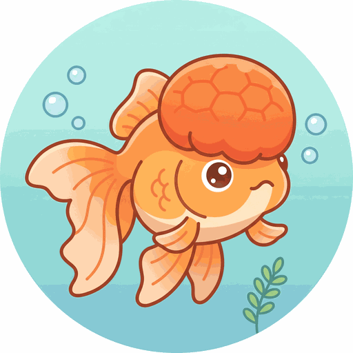

<!doctype html>
<html lang="ja">
<head>
<meta charset="utf-8">
<meta name="viewport" content="width=device-width, initial-scale=1">
<title>TTスーパーズコApp</title>
<style>
  html, body { margin:0; background:#2C7A99; }
  /* ★2026-10-29 トマトさん報告「No31で金額を入力中、画面がどんどん大きくなる（iPhone）」。
     iPhoneは同じ所を素早く2回たたくと拡大する＝数字ボタンで「00」などを打つと拡大していた。
     ボタン類だけ2回たたきの拡大を止める（指2本で広げる拡大はそのまま使える）。全画面共通。 */
  /* ★同日まるちゃん「ズコアプリのすべてに適用して」＝ボタンだけでなく表の行・カードなど押せる所すべてに広げた。 */
  * { touch-action: manipulation; }
  #root { min-height:100vh; }
  .boot { position:fixed; inset:0; display:flex; flex-direction:column; align-items:center; justify-content:center; gap:18px;
    color:#fff; opacity:.85; font-family:"Segoe UI","Hiragino Sans",system-ui,sans-serif; }
  /* ★2026-08-13：待ち画面のズコが出ず「空っぽの四角」だけ見える、とまるちゃん指摘。
     原因は2つ。①絵が icons/icon-512.png(265KB)で届くまで間があった → 見た目そのままで31KBに
     軽くした zuko-boot.png に差し替え。②届く前でも影(box-shadow)のせいで四角の枠だけ見えていた
     → 絵が届いて .ok が付くまで影を出さない（届くまでは何も無いように見える）。 */
  .bootIcon { width:min(60vw,260px); height:min(60vw,260px); border-radius:20%; box-shadow:none; }
  .bootIcon.ok { box-shadow:0 6px 20px rgba(0,0,0,.3); }
  .bootText { font-size:26px; font-weight:800; }
  .bootTextLg { font-size:min(11vw,50px); font-weight:800; text-align:center; line-height:1.35; padding:0 20px; }
  /* 名前選択（スタッフURLで初回のみ） */
  .pkwrap{ max-width:520px; margin:0 auto; padding:34px 18px; color:#fff;
    font-family:"Segoe UI","Hiragino Sans",system-ui,sans-serif; text-align:center; }
  .pktitle{ font-size:30px; font-weight:800; margin-bottom:22px; line-height:1.5; }
  .pkgrid{ display:grid; grid-template-columns:1fr 1fr; gap:12px; }
  .pk{ background:#fff; color:#155e75; border:0; border-radius:14px; padding:22px 10px;
    font-size:24px; font-weight:800; cursor:pointer; box-shadow:0 2px 6px rgba(0,0,0,.15); }
  .pk:active{ transform:scale(.97); }
  .pkbtns{ display:flex; gap:12px; justify-content:center; margin-top:6px; }
  .pkyes,.pkno{ border:0; border-radius:12px; padding:20px 36px; font-size:24px; font-weight:800; cursor:pointer; }
  .pkyes{ background:#16a34a; color:#fff; } .pkno{ background:#e5e7eb; color:#333; }
  .pknote{ margin-top:20px; font-size:12.5px; opacity:.82; line-height:1.7; }
  /* 合言葉（スタッフURLで初回のみ・名前選択より前に出す） */
  .pwinput2{ font-size:26px; text-align:center; padding:16px 14px; border-radius:14px; border:0;
    width:100%; max-width:280px; box-sizing:border-box; margin:0 auto 16px; display:block; }
  .pwgo{ background:#16a34a; color:#fff; border:0; border-radius:12px; padding:18px 40px;
    font-size:22px; font-weight:800; cursor:pointer; }
  .pwgo:active{ transform:scale(.97); }
  .pwgo:disabled{ opacity:.6; }
  .pwerr{ margin-top:16px; font-size:15px; color:#ffd7d7; min-height:1.4em; }
</style>
</head>
<body>
<div id="root"></div>
<script>
// ★★2026-10-18 まるちゃん「すぐやって」：グーグルの窓口への問い合わせ全部に「合言葉から作った印」を自動で添える。
//   それまでは、このページの中身（誰でも見られる公開の置き場）に窓口の住所と鍵が書いてあり、
//   合言葉なしで予約一覧・未回答のLINE・売上を誰でも取れた。窓口が印を確かめるようにしたので、
//   ここで全部の問い合わせ（画面の数に関係なく1か所）に印を付ける。印はパスワードを入れた端末にだけある。
//   ・印＝合言葉から計算した文字（合言葉そのものは送らない・この端末に覚える）。
//   ・パソコン版ズコは開く住所に印を付けて渡してくる（?zk=…）。
//   ・合言葉が変わって印が古くなったら、窓口がそう返す→印を消してもう一度パスワードを聞く。
// ★★2026-10-18 午後 まるちゃん「スタッフはもう名前でスマホに入っているから合言葉はいらない。データを渡す道に
//   すごい鍵を」→ スマホ1台ごとの鍵に変えた。
//   ・この端末の番号（zk_dv）と鍵（zk_dk）を窓口からもらって覚え、問い合わせ全部に添える。
//   ・初めてのスマホは、りゅうさんが許可するまで「許可待ち」の画面だけを出す（合言葉は聞かない）。
//   ・パソコン版ズコは開く住所に、このPC用の鍵（?zdv=…&zdk=…）を付けて渡してくる。
//   ・合言葉の印（zk_tk）は切り替えの間だけ一緒に添える（窓口で受け付けを止めたら使われなくなる）。
(function () {
  var LS_TK = 'zk_tk', LS_DV = 'zk_dv', LS_DK = 'zk_dk';
  var EXEC_URL = 'https://script.google.com/macros/s/AKfycbzSxho3e4CHyAuoymGlzcVwGnLshGoCg53zY18laLrHMq5Cun_pBv8XgRsNxKMDxlKwUA/exec';
  function g(k) { try { return localStorage.getItem(k) || ''; } catch (e) { return ''; } }
  function s(k, v) { try { localStorage.setItem(k, v); } catch (e) {} }
  function rm(k) { try { localStorage.removeItem(k); } catch (e) {} }
  function newDv() {
    var a = new Uint8Array(12);
    try { crypto.getRandomValues(a); } catch (e) { for (var i = 0; i < 12; i++) a[i] = Math.floor(Math.random() * 256); }
    var h = Array.prototype.map.call(a, function (x) { return ('0' + x.toString(16)).slice(-2); }).join('');
    s(LS_DV, h); return h;
  }
  try {
    var q = new URLSearchParams(location.search);
    var zk = q.get('zk'), zdv = q.get('zdv'), zdk = q.get('zdk');
    if (zk && /^[0-9a-f]{32}$/.test(zk)) { s(LS_TK, zk); s('sz_pw_ok', '1'); }
    if (zdv && zdk && /^[0-9a-f]{24}$/.test(zdv) && /^[0-9a-f]{32}$/.test(zdk)) { s(LS_DV, zdv); s(LS_DK, zdk); }
  } catch (e) {}
  if (!/^[0-9a-f]{24}$/.test(g(LS_DV))) { newDv(); rm(LS_DK); }
  var EXEC_RE = /^https:\/\/script\.google\.com\/macros\/s\/AKfycbzSxho3e4CH[^\/?]*\/exec/;
  function add(u) {
    u = String(u);
    if (!EXEC_RE.test(u)) return u;
    var dk = g(LS_DK), t = g(LS_TK);
    if (dk && !/[?&]dk=/.test(u)) u += (u.indexOf('?') < 0 ? '?' : '&') + 'dv=' + g(LS_DV) + '&dk=' + dk;
    if (t && !/[?&]tk=/.test(u)) u += (u.indexOf('?') < 0 ? '?' : '&') + 'tk=' + t;
    return u;
  }
  window.__zkAddTk = add;
  window.__ZK_NEED_PW = false;
  // 状態：ok＝鍵あり／tk＝合言葉の印だけ（切り替えの間）／need＝まだ何も無い（確認中）／pending＝許可待ち
  var st = g(LS_DK) ? 'ok' : (g(LS_TK) ? 'tk' : 'need');
  var code = g(LS_DV).slice(-4).toUpperCase();
  window.__zkBlocked = function () { return st === 'need' || st === 'pending'; };

  function ask(cb) {
    var name = '__zkDev' + Date.now();
    window[name] = function (r) { try { delete window[name]; } catch (e) {} cb(r || {}); };
    var ua = navigator.userAgent || '';
    var kind = /iPhone|iPad|iPod/.test(ua) ? 'iPhone' : (/Android/.test(ua) ? 'Android' : 'PC');
    var sp = new URLSearchParams(location.search);
    var role = g('sz_role') || (sp.get('staff') === '1' ? 'スタッフ' : (sp.get('dev') === '1' ? '開発' : '社長(幹部)'));
    var u = EXEC_URL + '?action=devkey&dv=' + g(LS_DV) + (g(LS_DK) ? '&dk=' + g(LS_DK) : '')
      + '&device=' + encodeURIComponent(g('sz_device')) + '&who=' + encodeURIComponent(g('sz_who'))
      + '&role=' + encodeURIComponent(role) + '&kind=' + kind
      + (g(LS_TK) ? '&tk=' + g(LS_TK) : '') + '&callback=' + name + '&cb=' + Date.now();
    var el = document.createElement('script');
    el.onerror = function () { cb({ ok: false, error: 'net' }); };
    el.src = u;
    (document.head || document.documentElement).appendChild(el);
  }
  var polling = false;
  function poll() {
    if (polling) return; polling = true;
    (function tick() {
      setTimeout(function () {
        ask(function (r) {
          if (r.dk) s(LS_DK, r.dk);
          if (r.state === 'ok') { location.reload(); return; }
          tick();
        });
      }, 15000);
    })();
  }
  window.__zkShowWait = function () {
    var root = document.getElementById('root');
    if (!root) return;
    try { window.__btDone && window.__btDone('許可待ち'); } catch (e) {}
    root.innerHTML = '<div class="pkwrap" style="text-align:center"><div class="pktitle">'
      + (st === 'need' ? '確認しています…' : 'このスマホは、まだ<br>ズコに登録されていません')
      + '</div>'
      + (st === 'need' ? '' : '<div style="color:#fff;font-size:18px;line-height:1.7;margin-top:12px">'
        + 'りゅうさんが許可すると、自動で開きます。<br>このまま少し待っててくださいね🥺</div>'
        + '<div style="color:#fff;font-size:22px;font-weight:700;margin-top:18px">画面の番号：' + code + '</div>')
      + '</div>';
    if (st === 'pending') poll();
  };
  function settle(r, prev) {
    if (r.dk) s(LS_DK, r.dk);
    if (r.state === 'ok') { st = 'ok'; if (prev === 'need' || prev === 'pending') location.reload(); return; }
    if (r.state === 'pending') { st = (prev === 'tk') ? 'tk' : 'pending'; if (st === 'pending') window.__zkShowWait(); return; }
    if (r.state === 'taken') { newDv(); rm(LS_DK); code = g(LS_DV).slice(-4).toUpperCase(); ask(function (r2) { settle(r2, prev); }); return; }
    if (prev === 'need') { st = 'pending'; window.__zkShowWait(); }   // 通信に失敗＝許可待ちの画面で待つ
  }
  if (st !== 'ok') { var prev0 = st; ask(function (r) { settle(r, prev0); }); }

  window.__zkAuthFail = function () {
    if (st === 'need' || st === 'pending') return;      // 確認中・許可待ちの画面が出ている
    try { if (sessionStorage.getItem('zk_fail_once')) return; sessionStorage.setItem('zk_fail_once', '1'); } catch (e) {}
    rm(LS_TK); rm('sz_pw_ok');
    if (!g(LS_DK)) { location.reload(); return; }
    ask(function (r) {
      if (r.dk) s(LS_DK, r.dk);
      if (r.state === 'ok') { location.reload(); return; }
      if (r.state === 'taken') { newDv(); rm(LS_DK); location.reload(); return; }
      st = 'pending'; window.__zkShowWait();
    });
  };
  try {
    var d = Object.getOwnPropertyDescriptor(HTMLScriptElement.prototype, 'src');
    Object.defineProperty(HTMLScriptElement.prototype, 'src', {
      configurable: true, enumerable: d.enumerable,
      get: function () { return d.get.call(this); },
      set: function (v) { d.set.call(this, add(v)); }
    });
    var sa = Element.prototype.setAttribute;
    Element.prototype.setAttribute = function (n, v) {
      if (this instanceof HTMLScriptElement && String(n).toLowerCase() === 'src') v = add(v);
      return sa.call(this, n, v);
    };
  } catch (e) {}
  if (window.fetch) {
    var f0 = window.fetch;
    window.fetch = function (i, o) { if (typeof i === 'string') i = add(i); return f0.call(this, i, o); };
  }
  // 合言葉から印を作る（端末の中だけで計算）。
  window.__zkMakeTk = function (pw) {
    var b = new TextEncoder().encode('zuko|' + pw);
    return crypto.subtle.digest('SHA-256', b).then(function (h) {
      return Array.prototype.map.call(new Uint8Array(h), function (x) { return ('0' + x.toString(16)).slice(-2); })
        .join('').slice(0, 32);
    });
  };
})();
</script>
<script>
// ★2026-09-14 まるちゃん依頼：「開いてから画面が出るまで何秒・どこで待ったか」を人ごとに記録する。
//   きっかけ＝TOMATOさんのiPhoneだけ「ズコは少し遠出かも...」が長く出る（開発者のAndroidは速い）。
//   ここで開き始めを控え、段階ごとに端末へ書き足す。画面が出たら1件の記録にして貯め、
//   数分に1回まとめて事務所PCへ送る（下の btSend_）。途中で閉じた回は、次に開いた時に
//   「どこまで進んでいたか」付きで送る＝原因が追える。画面の見た目は一切変えない。
(function () {
  var LS_OPEN = 'sz_bt_open', LS_Q = 'sz_bt_q';
  function g(k){ try{ return localStorage.getItem(k); }catch(e){ return null; } }
  function s(k,v){ try{ localStorage.setItem(k,v); }catch(e){} }
  var ua = navigator.userAgent || '';
  var kind = /iPhone|iPad|iPod/.test(ua) ? 'iPhone' : (/Android/.test(ua) ? 'Android' : 'PC');
  var app = (navigator.standalone === true ||
             (window.matchMedia && matchMedia('(display-mode: standalone)').matches)) ? 'アイコン' : 'ブラウザ';
  var view = (new URLSearchParams(location.search)).get('view') || 'home';
  // 前回、画面が出る前に閉じられていたら「途中で閉じた」として貯める。
  try {
    var prev = g(LS_OPEN);
    if (prev) {
      var p = JSON.parse(prev); p.r = '途中で閉じた';
      var q0 = JSON.parse(g(LS_Q) || '[]'); q0.push(p); s(LS_Q, JSON.stringify(q0.slice(-40)));
    }
  } catch (e) {}
  var bt = window.__BT = { at: new Date().toISOString(), v: view, k: kind, a: app, st: '入口', h: 0,
                           sw: (navigator.serviceWorker && navigator.serviceWorker.controller) ? '有' : '無' };
  try {
    var nav = performance.getEntriesByType('navigation')[0];
    if (nav) {
      bt.e = Math.round(nav.responseEnd);
      bt.w = nav.workerStart ? Math.round(Math.max(0, nav.fetchStart - nav.workerStart)) : 0;
      bt.nt = nav.type;
    }
  } catch (e) {}
  var hidAt = document.visibilityState === 'hidden' ? performance.now() : null;
  document.addEventListener('visibilitychange', function () {
    if (bt.done) return;
    if (document.visibilityState === 'hidden') hidAt = performance.now();
    else if (hidAt !== null) { bt.h += Math.round(performance.now() - hidAt); hidAt = null; }
  });
  window.__btMark = function (stage, key) {
    if (bt.done) return;
    bt.st = stage;
    if (key) bt[key] = Math.round(performance.now());
    s(LS_OPEN, JSON.stringify(bt));
  };
  window.__btDone = function (result) {
    if (bt.done) return;
    if (hidAt !== null) { bt.h += Math.round(performance.now() - hidAt); hidAt = null; }
    bt.sh = Math.round(performance.now()); bt.r = result; bt.st = '表示';
    try {
      // ★2026-11-08：本体は部品に分けて読む（parts/）。受け取りにかかった分＝部品全部の最初から最後まで。
      var ces = performance.getEntriesByType('resource').filter(function (x) { return /\/code\.js|\/parts\//.test(x.name); });
      if (ces.length) {
        var c0 = Infinity, c1 = 0;
        for (var ci = 0; ci < ces.length; ci++) { c0 = Math.min(c0, ces[ci].startTime); c1 = Math.max(c1, ces[ci].responseEnd); }
        bt.c = Math.round(c1 - c0);
      }
    } catch (e) {}
    bt.pt = window.__SZ_PT_ || '';   // 部品だけ読んだか（parts）・丸ごと読んだか（full）
    var rec = {}; for (var k in bt) if (k !== 'done') rec[k] = bt[k];
    bt.done = true;
    try { var q = JSON.parse(g(LS_Q) || '[]'); q.push(rec); s(LS_Q, JSON.stringify(q.slice(-40))); } catch (e) {}
    try { localStorage.removeItem(LS_OPEN); } catch (e) {}
    if (window.__btSend) setTimeout(window.__btSend, 4000);   // 画面の読み込みと取り合わないよう少し後で
  };
  s(LS_OPEN, JSON.stringify(bt));
})();
</script>
<script>
(function () {
  // 待ち画面はどちらも金魚（ズコ）にそろえる（まるちゃん指示 2026-08-12）。
  //   ホーム(view無し)＝「ズコは少し遠出かも...」／ボタン後の画面(?view=… 付き)＝「ズコがお散歩中...」。
  //   ＝はじめ「お散歩中」、読み込みが長引いて自動でホームに戻った時に「少し遠出かも...」になる。
  var view = (new URLSearchParams(location.search)).get('view') || 'home';
  var root = document.getElementById('root');
  if (view === 'home') {
    root.innerHTML = '<div class="boot"><div class="bootText">ズコは少し遠出かも...</div></div>';
  } else {
    root.innerHTML = '<div class="boot"><div class="bootText">ズコがお散歩中...</div></div>';
  }
  // ★2026-09-14 まるちゃん「ながいまちのときはズコを遠出にするんじゃなかったっけ？でなかったよ」。
  //   「遠出」は8/12に外した"8秒でホームへ戻す保険"とセットで出ていたので、保険と一緒に出なくなっていた。
  //   → 画面は奪わず、8秒たってもまだ待ち画面なら文言だけ「少し遠出かも...」に変える（全ボタン共通）。
  setTimeout(function () {
    var t = root.querySelector('.boot .bootText');
    if (t) t.textContent = 'ズコは少し遠出かも...';
  }, 8000);
})();
</script>

<!-- 判定コア(detect)と、GASと共通の描画関数(renderHome_/renderPage_/personPerms_ など)。
     どちらも純JS。GAS専用の関数(doGet等)は同梱されるが呼ばれないだけ。
     ★?v=... はキャッシュ避け（GitHub PagesがCache-Control: max-age=600を付けるため、
     コード更新のたびにここの番号を上げないとスマホが古いJSを最大10分キャッシュし続ける）。
     更新手順：code.js/detect_core.jsを直したら、この2行の?v=も必ず同じ値へ上げてからpushする。 -->
<!-- ★被り画面の初期表示を最速化：events(被りデータ)と tilesettings(権限)の取得を、重い
     detect_core.js/code.js の読み込みより「前」に発射する（約0.6秒早くスタート）。結果はグローバルに
     貯め、下の本体スクリプトが code 読み込み後に拾って描画/起動する（発射だけなので code 不要）。 -->
<script>
(function () {
  var EXEC = "https://script.google.com/macros/s/AKfycbzSxho3e4CHyAuoymGlzcVwGnLshGoCg53zY18laLrHMq5Cun_pBv8XgRsNxKMDxlKwUA/exec";
  var view = (new URLSearchParams(location.search)).get('view') || 'home';

  // ★2026-09-16：事務所パソコンの窓（中身はこのページ）は、ページの読み込みが「全部終わってから」でないと
  //   手元のデータを渡してこられない。グーグルへの問い合わせを読み込み中に出すと、返事が来るまで（3〜11秒）
  //   読み込みが終わらず、手元のデータも渡せなかった。→ パソコンの窓の中だけ、問い合わせを読み込み後に出す。
  //   （見分け＝パソコンの窓にだけある印。スマホ・普通のブラウザは今までどおりすぐ出す）
  var PC_WINDOW = !!(window.chrome && window.chrome.webview);
  function sendLater_(el) {
    if (!PC_WINDOW || document.readyState === 'complete') { document.head.appendChild(el); return; }
    window.addEventListener('load', function () { setTimeout(function () { document.head.appendChild(el); }, 0); });
  }

  // tilesettings（権限・名前選択に必要＝全画面で使う）
  window.__tsResult = undefined; window.__tsWaiter = null;
  window.__ttTileSettingsPre = function (payload) {
    try { if (window.__BT && window.__BT.cm === undefined) window.__BT.cm = Math.round(performance.now()); } catch (e) {}
    window.__tsResult = payload || {};
    var w = window.__tsWaiter; window.__tsWaiter = null; if (w) w(window.__tsResult);
  };
  var s0 = document.createElement('script');
  s0.src = EXEC + '?action=data&name=tile_settings.json&callback=__ttTileSettingsPre&cb=' + Date.now();
  s0.onerror = function () { window.__ttTileSettingsPre({}); };
  sendLater_(s0);

  // ★★2026-07-17：全ボタン共通「押してから表示までを速くする」仕組み（1本化）。
  //   新しいボタンを足す時は、下の VIEWS 表に1行足すだけで、①このページ自身の先読み
  //   ②ホーム画面滞在中の裏取り、の両方に自動で乗る（個別にコードを書き足す必要がない）。
  //   ★実測：どのデータも取得はGoogleの処理時間だけで常に2〜2.9秒かかる（中身を軽くしても
  //   縮まらない）。だから「押してから取りに行く」のをやめ、前の画面（主にホーム）に
  //   居る間に裏で済ませておく方式に統一した（被り検出で先に実装・検証済みの型を横展開）。
  // ★2026-09-16まるちゃん：パソコンの窓（事務所PC）は同じデータを手元に持っているので、グーグルを待たずに
  //   渡してもらう入口。画面の準備ができる前に届いた分はここに預かり、準備ができた所で使う（下の showPrefetchable_）。
  window.__szPushLocal_ = function (v, p) { window.__szLocalPending_ = { v: v, p: p }; };
  var VIEWS = window.__SZ_VIEWS_ = {
    conflict:   'events.json',
    lt:         'lt_match.json',
    uriage:     'uriage.json',
    unanswered: 'unanswered.json',
    akijikan:   'akijikan.json',
    // ★2026-09-11：「施術後の予約」も今日の予約(events.json)を使う。被り検出と同じファイルなので、
    //   ホームでの裏取りは1回だけ行い、取れた中身を両方の画面に配る（下の prefetchForHome_）。
    yoyaku_sejutsugo: 'events.json',
    // ★2026-09-17：プロセル残り本数（事務所PCが毎晩書き出す）。前はこの画面へ進む道自体が無かった。
    procell:    'procell.json'
    // ★links(各種LINKのURL一覧)は速い置き場(GitHub Pages)から直接取るのでここには入れない（グーグル窓口を使わない）。
    // ★kanshi(自動監視)は対象外＝開発URL専用でスタッフの目には触れず、装置の見分け(device)も
    //   要るため。頻度も低く先取りの旨味が薄い（詳細は共通\スーパーズコApp_必読.md）。
  };
  window.__PF_ = window.__PF_ || {};

  var action = VIEWS[view];
  // ★2026-10-07 まるちゃん「番号検索の場合は今日の予約は要らない。必要な所で読むように」＝
  //   リピート入力（施術後の予約を mode=repeat で開いた時）は、入口で今日の予約を先読みしない（画面が必要な時に読む）。
  if (view === 'yoyaku_sejutsugo' && /[?&]mode=repeat(&|$)/.test(location.search)) action = null;
  if (action) {
    var entry = window.__PF_[view] = { payload: undefined, waiter: null, cached: null, done: false };
    // ホーム画面滞在中に裏取りできていた分があれば使い切りで受け取る（無ければ null のまま）。
    try {
      var raw = sessionStorage.getItem('sz_prefetch_' + view);
      sessionStorage.removeItem('sz_prefetch_' + view);   // 使い切り＝次に来た時は必ずまた取り直す
      if (raw) {
        var c = JSON.parse(raw);
        if (c && c.payload) entry.cached = c.payload;
      }
    } catch (e) {}
    // このページ自身の新しい取得も同時に発射（従来の「先読み」と同じ・被り検出で検証済み）。
    var cb = '__ttPre_' + view;
    window[cb] = function (payload) {
      entry.payload = payload || null;
      var w = entry.waiter; entry.waiter = null; if (w) w(entry.payload);
    };
    var sp = document.createElement('script');
    sp.src = EXEC + '?action=data&name=' + action + '&callback=' + cb + '&cb=' + Date.now();
    sp.onerror = function () { window[cb]({ error: 'net' }); };
    sendLater_(sp);
  }
})();
</script>
<script src="detect_core.js?v=eced4fb478"></script>
<!-- 新規予約入力の「出し入れの判断」＝パソコン版と共有する唯一の正本の写し。
     正本＝AI自動プログラム\共通\画面\新規予約入力_判断.js（手で書き写さない・共通\画面\スマホへ配る.py が写す）。code.js より前に読む。 -->
<!-- お店の決まり（定休日など）＝共通usiness_day.py から自動で作った写し。手で書き換えない。 -->
<!-- 用事ごとの制限時間＝受付係のコードから自動で作った写し。手で書き換えない。 -->
<script src="op_limits.js?v=613776b4e1"></script>
<script src="shop_rules.js?v=32af77593f"></script>
<!-- 前日お知らせの「出し入れの判断」＝パソコン版と共有する正本の写し。 -->
<script src="zj_rules.js?v=2f9242edbf"></script>
<script src="nr_rules.js?v=296235a7ec"></script>
<!-- 「施術後の予約」で担当をどう並べ・どれをはじめから選ぶかの決まり＝パソコン版と共有する正本の写し。 -->
<script src="sg_rules.js?v=cacaae951a"></script>
<!-- 大きい依頼を別の入口へ丸ごと預ける決まり＝共通\画面\大きい依頼_別送.js の写し。手で書き換えない。 -->
<script src="bigsend.js?v=76e65d7673"></script>
<!-- ★2026-10-02：LINEの吹き出しの折り返し（共通\画面\LINEの折り返し.js の写し）。code.js より先に読む -->
<script src="line_wrap.js?v=315503a50a"></script>
<!-- ★2026-11-08 まるちゃん決定：本体(code.js)は、開いた画面に要る部品だけを読む（ホームは本体の約1割）。
     部品(parts/)と下の一覧は、コミットの直前に機械が code.js から自動で作る（.githooks/zuko_split.py）。
     ＝修正するのは今までどおり code.js だけ。parts/ と一覧は手作業で修正しない。
     安全側：一覧に無い画面・前に部品が足りなかった端末は code.js を丸ごと読む。
     動いている最中に部品が足りないと分かったら、その場で code.js を丸ごと追加で読み込む。 -->
<script>/*SZ-PARTS-BEGIN（機械が作る・手で直さない＝.githooks/zuko_split.py）*/window.__SZ_PARTS_={"id":"2a5df83ad3","full":"code.js?v=2a5df83ad3","core":"parts/core.js?v=ccf6907579","views":{"akijikan":["parts/s_496569b7.js?v=db0f26ca68","parts/v_akijikan.js?v=60738fed67"],"bcast":["parts/s_cd0071b4.js?v=a8d77a7980","parts/s_a958c30c.js?v=92155190f7","parts/v_bcast.js?v=060d69a4e0"],"claudetools":["parts/v_claudetools.js?v=b65b5fb958"],"conflict":[],"cost":["parts/v_cost.js?v=e2f6aaedae"],"facebook":["parts/s_cd0071b4.js?v=a8d77a7980","parts/s_a958c30c.js?v=92155190f7","parts/s_864dbff0.js?v=99beff0d3f","parts/s_21b3d80f.js?v=26e99a386b","parts/v_facebook.js?v=031ec236ba"],"foldertest":["parts/v_foldertest.js?v=33e9aab9da"],"hachimitsu":["parts/s_cd0071b4.js?v=a8d77a7980","parts/s_a958c30c.js?v=92155190f7","parts/s_bf6504f2.js?v=02be720eb9","parts/v_hachimitsu.js?v=6d21096bc4"],"hanbai":["parts/s_cd0071b4.js?v=a8d77a7980","parts/s_a958c30c.js?v=92155190f7","parts/s_bf6504f2.js?v=02be720eb9","parts/s_91170aba.js?v=12d7de8cdf","parts/s_70af9c07.js?v=f674a3a3e0","parts/s_6ceaffbc.js?v=06b479ba16","parts/s_cfcd4543.js?v=d158af6ab7","parts/v_hanbai.js?v=229f9fb09e"],"insta":["parts/s_cd0071b4.js?v=a8d77a7980","parts/s_a958c30c.js?v=92155190f7","parts/s_864dbff0.js?v=99beff0d3f","parts/s_21b3d80f.js?v=26e99a386b","parts/v_insta.js?v=d079c4f944"],"kanshi":["parts/s_cd0071b4.js?v=a8d77a7980","parts/s_a958c30c.js?v=92155190f7","parts/s_864dbff0.js?v=99beff0d3f","parts/v_kanshi.js?v=f9dbf491a1"],"koukoku":["parts/v_koukoku.js?v=9cd9182eb1"],"links":["parts/v_links.js?v=01e339a716"],"lt":["parts/v_lt.js?v=654d407ff2"],"mita":["parts/v_mita.js?v=59a3226b7c"],"pcstatus":["parts/v_pcstatus.js?v=faaa07b023"],"procamp":["parts/v_procamp.js?v=bc2689e196"],"procell":["parts/s_0a1df55c.js?v=fe3c3abb68","parts/v_procell.js?v=4c1fc67a7d"],"procstock":["parts/s_bf6504f2.js?v=02be720eb9","parts/s_91170aba.js?v=12d7de8cdf","parts/s_6ceaffbc.js?v=06b479ba16","parts/v_procstock.js?v=eb55bb9bc1"],"rireki":["parts/v_rireki.js?v=b4bdeec770"],"shomeisho":["parts/s_cd0071b4.js?v=a8d77a7980","parts/v_shomeisho.js?v=7cde13947a"],"shophist":["parts/s_0a1df55c.js?v=fe3c3abb68","parts/v_shophist.js?v=b467d4b2fc"],"threads":["parts/s_cd0071b4.js?v=a8d77a7980","parts/s_a958c30c.js?v=92155190f7","parts/s_864dbff0.js?v=99beff0d3f","parts/s_bf6504f2.js?v=02be720eb9","parts/s_21b3d80f.js?v=26e99a386b","parts/s_cfcd4543.js?v=d158af6ab7","parts/v_threads.js?v=4b7502d381"],"timedsend":["parts/s_cd0071b4.js?v=a8d77a7980","parts/s_a958c30c.js?v=92155190f7","parts/s_864dbff0.js?v=99beff0d3f","parts/v_timedsend.js?v=3308904d19"],"timetree":["parts/s_cd0071b4.js?v=a8d77a7980","parts/s_a958c30c.js?v=92155190f7","parts/s_864dbff0.js?v=99beff0d3f","parts/v_timetree.js?v=f356aa8327"],"ttapp":["parts/v_ttapp.js?v=adda9cb522"],"unanswered":["parts/v_unanswered.js?v=19e18daa87"],"uriage":[],"uriagebook":["parts/s_bf6504f2.js?v=02be720eb9","parts/s_91170aba.js?v=12d7de8cdf","parts/s_70af9c07.js?v=f674a3a3e0","parts/v_uriagebook.js?v=40dc494e61"],"yoyaku":["parts/v_yoyaku.js?v=52492665b9"],"yoyaku_henkou":["parts/s_cd0071b4.js?v=a8d77a7980","parts/s_864dbff0.js?v=99beff0d3f","parts/s_bf6504f2.js?v=02be720eb9","parts/s_91170aba.js?v=12d7de8cdf","parts/s_70af9c07.js?v=f674a3a3e0","parts/s_496569b7.js?v=db0f26ca68","parts/s_65513019.js?v=e9a846d894","parts/s_9ea5ff89.js?v=28b8f2cc74"],"yoyaku_kizon":["parts/s_cd0071b4.js?v=a8d77a7980","parts/s_864dbff0.js?v=99beff0d3f","parts/s_bf6504f2.js?v=02be720eb9","parts/s_91170aba.js?v=12d7de8cdf","parts/s_70af9c07.js?v=f674a3a3e0","parts/s_496569b7.js?v=db0f26ca68","parts/s_65513019.js?v=e9a846d894","parts/s_9ea5ff89.js?v=28b8f2cc74"],"yoyaku_new":["parts/s_cd0071b4.js?v=a8d77a7980","parts/s_a958c30c.js?v=92155190f7","parts/s_864dbff0.js?v=99beff0d3f","parts/v_yoyaku_new.js?v=b315552ac8"],"yoyaku_sejutsugo":["parts/s_cd0071b4.js?v=a8d77a7980","parts/s_a958c30c.js?v=92155190f7","parts/s_864dbff0.js?v=99beff0d3f","parts/s_bf6504f2.js?v=02be720eb9","parts/s_91170aba.js?v=12d7de8cdf","parts/s_70af9c07.js?v=f674a3a3e0","parts/s_496569b7.js?v=db0f26ca68","parts/s_65513019.js?v=e9a846d894","parts/v_yoyaku_sejutsugo.js?v=fe366a2289"],"zenjitsu":["parts/v_zenjitsu.js?v=7d9b742768"]}};/*SZ-PARTS-END*/</script>
<script>
(function () {
  var P = window.__SZ_PARTS_ || {};
  var full = P.full || 'code.js';
  var view = (new URLSearchParams(location.search)).get('view') || 'home';
  var LS_FULL = 'sz_parts_full';
  var useFull = false;
  try { useFull = !!P.id && localStorage.getItem(LS_FULL) === P.id; } catch (e) {}
  var list = null;
  if (!useFull && P.core && P.views) {
    if (view === 'home') list = [];
    else if (Object.prototype.hasOwnProperty.call(P.views, view)) list = P.views[view];
  }
  var html = '';
  if (list) {
    window.__SZ_PT_ = 'parts';
    html += '<script src="' + P.core + '"><\/script>';
    for (var i = 0; i < list.length; i++) html += '<script src="' + list[i] + '"><\/script>';
  } else {
    window.__SZ_PT_ = useFull ? 'full(前に不足)' : 'full';
    html += '<script src="' + full + '"><\/script>';
  }
  document.write(html);
  // 動いている最中に部品が足りなかった時（「〜が見つからない」）＝その場で丸ごと読み足し、この端末は次から丸ごと読む
  window.addEventListener('error', function (ev) {
    if (window.__SZ_PT_ !== 'parts' || window.__szFullAdded) return;
    var m = String((ev && ev.message) || '');
    if (!/is not defined|Can't find variable|not defined/i.test(m)) return;
    window.__szFullAdded = true;
    window.__SZ_PT_ = 'parts+full(不足:' + m.slice(0, 60) + ')';
    try { if (P.id) localStorage.setItem(LS_FULL, P.id); } catch (e) {}
    var s = document.createElement('script');
    s.src = full;
    (document.head || document.documentElement).appendChild(s);
  });
})();
</script>
<script>
(function () {
  try { window.__btMark && window.__btMark('本体を読み終わった', 's'); } catch (e) {}
  // 施術室被りデータは公開リポジトリに置かず、GASからJSONPで取得する
  // （このページはGASを表示しないので、Googleの「別ユーザー作成」警告バーは出ない）。
  var EXEC = "https://script.google.com/macros/s/AKfycbzSxho3e4CHyAuoymGlzcVwGnLshGoCg53zY18laLrHMq5Cun_pBv8XgRsNxKMDxlKwUA/exec";

  var params = new URLSearchParams(location.search);
  var view  = params.get('view') || 'home';
  var staff = params.get('staff') === '1';
  // 開発用URL（?dev=1）＝tile_settings.jsonの表示ON/OFF設定を無視して全ボタン表示。staff指定時は無効。
  var dev   = !staff && params.get('dev') === '1';
  var nail  = params.get('nail') === '1';
  var base  = location.pathname;   // メニュー内の遷移は同じページの ?view= を切り替えるだけ

  // ===== 操作者(who)＝この端末で選んだ名前。localStorageに「固定」する。=====
  // 一度選んだら本人は変更不可。変えられるのは開発者だけ＝開発URLに ?reset=1 を付けて解除する。
  var LS_WHO='sz_who', LS_ROLE='sz_role', LS_DEV='sz_device', LS_LABEL='sz_label', LS_PWOK='sz_pw_ok';
  function lsGet(k){ try{ return localStorage.getItem(k)||''; }catch(e){ return ''; } }
  function lsSet(k,v){ try{ localStorage.setItem(k,v); }catch(e){} }
  function lsDel(k){ try{ localStorage.removeItem(k); }catch(e){} }
  // 開発者だけのロック解除（対象端末で開発URL＋?reset=1を開く）。
  if (dev && params.get('reset') === '1') { lsDel(LS_WHO); lsDel(LS_ROLE); lsDel(LS_LABEL); }
  // ★IGのDMの合言葉：URLに idmkey が付いていたら、この端末に覚えさせる（パソコン版・開発ズコの
  //   事前ログイン用。合言葉そのものは公開コードに書かず、開いたURLからだけ入る）。

  // ★2026-11-10 まるちゃん「ズコにログイン済みの人が1回押せば、別に入れたスレッズコのアイコンはもう許可済み、にできない？」
  //   iPhoneはホーム画面のアイコンごとに覚えている物が別＝新しいアイコンはまっさら（新しいスマホ扱い＝許可待ち・
  //   スタッフは自分の名前が使用中で選べない）。そこで、ログイン済みのズコが「このスマホの番号と鍵・端末の番号・
  //   選んだ名前」を住所に付けた自分専用のリンクを作り（下の zkCarryUrl_）、そのリンクをホーム画面に入れる。
  //   新しいアイコンは開くたびに住所からそれを受け取る＝窓口と受付係から見て同じスマホ・同じ人（許可も名前選びも要らない）。
  //   番号と鍵（zdv・zdk）は上の鍵の所がパソコン版と同じ形で受け取る。ここは残り（端末の番号・名前・選んだ時刻）を受け取る。
  //   ★グーグル側は無改修。名前は「窓口に許可済みの端末」と「名前選択で確保した端末」が同じ時だけ受付係が通す＝今までと同じ守り。
  function zkCarryIn_(q, isStaff) {
    var out = {};
    var sd = q.get('zsd') || '';
    if (!(q.get('zdv') && q.get('zdk') && /^d[0-9a-z]{6,40}$/.test(sd))) return out;
    out.sz_device = sd;
    var w = q.get('zwho') || '', at = q.get('zat') || '';
    if (isStaff && /^[0-9a-z_]{1,40}$/.test(w)) {
      out.sz_who = w; out.sz_role = 'スタッフ';
      if (/^\d{1,16}$/.test(at)) out.sz_picked_at = at;
    }
    return out;
  }
  (function () { var c = zkCarryIn_(params, staff); for (var k in c) { if (c.hasOwnProperty(k)) lsSet(k, c[k]); } })();

  var device = lsGet(LS_DEV);
  if (!device) { device = 'd' + Date.now().toString(36) + Math.random().toString(36).slice(2, 8); lsSet(LS_DEV, device); }
  var who  = staff ? lsGet(LS_WHO) : '';
  var role = staff ? (lsGet(LS_ROLE) || 'スタッフ') : (dev ? '開発' : '社長(幹部)');
  // MOVESCRIPT_ の szIdent_（部屋移動の送信）が拾えるようグローバルへ。localStorageが主・これは補助。
  window.__SZ_WHO_ = who;
  window.__SZ_ROLE_ = role;
  window.__SZ_DEVICE_ = device;

  // ===== ホーム画面インストール可否（PWA化）。幹部用/スタッフ用/開発用の全URLで共通。=====
  // 自動の案内帯は出さない。Android=Chromeの「⋮」メニュー→「アプリをインストール」、
  // iPhone=共有ボタン→「ホーム画面に追加」、どちらも手動のみ。名前とアイコンは3つとも同じ。
  // ★2026-11-10 まるちゃん決定：スレッズコだけは、ズコとは別のアイコン（黒地のThreadsのマークを金魚がくぐる絵）で
  //   ホーム画面に入れられる。スレッズコを独立した画面の住所（?view=threads&solo=1）で開いている時だけ、
  //   名前「スレッズコ」・専用のアイコン・専用の開き先（その人の種類のまま スレッズコがいきなり開く）に切り替える。
  //   ふつうのズコの住所で開いた時は今までと1つも変わらない。
  (function () {
    var soloThreads = (view === 'threads' && params.get('solo') === '1');
    var kind = staff ? 'staff' : (dev ? 'dev' : 'kanbu');
    var manifestFile = (soloThreads ? 'manifest-threads-' : 'manifest-') + kind + '.json';
    var head = document.head;

    // ★iPhoneは、設定（manifest）が付いているとその開き先でアイコンを作る＝住所に付けた引き継ぎ（上の zkCarryIn_）が落ちる。
    //   引き継ぎ付きの住所をiPhoneで開いた時だけ設定を付けない＝今開いている住所のままアイコンになる。
    var iosCarry = soloThreads && /iPhone|iPad|iPod/.test(navigator.userAgent || '') && !!params.get('zdv');
    if (!iosCarry) {
      var manifestLink = document.createElement('link');
      manifestLink.rel = 'manifest';
      manifestLink.href = manifestFile;
      head.appendChild(manifestLink);
    }

    if ('serviceWorker' in navigator) {
      // ★2026-07-18：スタッフが手で「完全に閉じて開き直す」「アイコンを削除して入れ直す」等を
      //   しなくても新しい版が届くようにする。ブラウザは既定だと保存係(sw.js)の中身を
      //   最大24時間チェックしないことがある＝普通に開き直すだけでは新しくならない場合がある。
      //   対策：①毎回開いた瞬間に明示的に更新確認(update())を強制②新しい保存係に交代した瞬間
      //   (controllerchange)に1回だけ自動で画面を作り直す(location.reload)。人の操作は不要。
      navigator.serviceWorker.register('sw.js', { updateViaCache: 'none' }).then(function (reg) {
        try { reg.update(); } catch (e) {}
      }).catch(function () {});
      var szReloaded = false;
      navigator.serviceWorker.addEventListener('controllerchange', function () {
        if (szReloaded) return;
        szReloaded = true;
        try { window.__btMark && window.__btMark('保管係の交代で読み直し'); } catch (e) {}
        location.reload();
      });
    }

    // Chrome自身が出す自動バナーも抑止（手動メニューからのインストールは引き続き可能）。
    window.addEventListener('beforeinstallprompt', function (e) { e.preventDefault(); });

    // ===== iPhone(Safari)対応 =====
    // iOSはmanifest.jsonの内容を見ないので、Apple専用のmeta/linkで同じことを指定する。
    // インストールは常に手動(共有ボタン→「ホーム画面に追加」)のみ・自動バナーはiOSに存在しない。
    var appleCapable = document.createElement('meta');
    appleCapable.name = 'apple-mobile-web-app-capable';
    appleCapable.content = 'yes';
    head.appendChild(appleCapable);

    var appleTitle = document.createElement('meta');
    appleTitle.name = 'apple-mobile-web-app-title';
    appleTitle.content = soloThreads ? 'スレッズコ' : 'TTズコ';
    head.appendChild(appleTitle);

    var appleStatusBar = document.createElement('meta');
    appleStatusBar.name = 'apple-mobile-web-app-status-bar-style';
    appleStatusBar.content = 'black-translucent';
    head.appendChild(appleStatusBar);

    var appleIcon = document.createElement('link');
    appleIcon.rel = 'apple-touch-icon';
    appleIcon.sizes = '180x180';
    appleIcon.href = soloThreads ? 'icons/threads-180.png' : 'icons/icon-180.png';
    head.appendChild(appleIcon);
  })();

  function esc(s){ return (typeof esc_==='function') ? esc_(s) : String(s==null?'':s); }

  function runScripts(container) {
    // innerHTMLで挿入した<script>は実行されないので、作り直して実行する
    // （renderPage_ 内の TTSCRIPT_/MOVESCRIPT_ などを効かせるため）。
    var list = container.querySelectorAll('script');
    for (var i = 0; i < list.length; i++) {
      var old = list[i];
      var s = document.createElement('script');
      if (old.src) s.src = old.src; else s.textContent = old.textContent;
      old.parentNode.replaceChild(s, old);
    }
  }

  function mount(html) {
    var root = document.getElementById('root');
    root.innerHTML = html;
    runScripts(root);
    // ★2026-11-13 開発版は見出しの絵もボタンの新しい絵に（code.js の devHeadMark_）
    try { if (typeof devHeadMark_ === "function") devHeadMark_(root, view, dev); } catch (e) {}
    window.scrollTo(0, 0);
    try { window.__btDone && window.__btDone('表示できた'); } catch (e) {}
  }

  function fail(msg) {
    document.getElementById('root').innerHTML =
      '<div class="boot" style="text-align:center;padding:1.5em;">' + msg + '</div>';
    try { window.__btDone && window.__btDone('エラー'); } catch (e) {}
  }

  // ★2026-09-14：貯めた「開いてから画面が出るまで」の記録を、数分に1回だけまとめて事務所PCへ送る。
  //   依頼の置き場は1分12件までなので、開くたびには送らない（予約などの本当の依頼の邪魔をしない）。
  //   送れたら送った分だけ消す。送れなければ次に開いた時にまた送る。
  window.__btSend = function () {
    var LS_Q = 'sz_bt_q', LS_SENT = 'sz_bt_sent';
    if (window.__SZ_AS_) return;   // ★見本（&as=）の秒数はその人の記録にしない（ズコの速さの見張りが数えるため）
    try {
      var last = parseInt(lsGet(LS_SENT) || '0', 10) || 0;
      if (Date.now() - last < 3 * 60 * 1000) return;
      if (typeof EDIT_KEY === 'undefined') return;
      var q = JSON.parse(lsGet(LS_Q) || '[]');
      if (!q.length) return;
      var take = [];
      for (var i = 0; i < q.length && take.length < 15; i++) {
        take.push(q[i]);
        if (JSON.stringify(take).length > 3500) { take.pop(); break; }
      }
      if (!take.length) { lsSet(LS_Q, JSON.stringify(q.slice(1))); return; }
      lsSet(LS_SENT, String(Date.now()));
      var cb = '__btSent' + Date.now();
      window[cb] = function (r) {
        try { delete window[cb]; } catch (e) {}
        if (!r || !r.ok) return;
        try {
          var now = JSON.parse(lsGet(LS_Q) || '[]');
          lsSet(LS_Q, JSON.stringify(now.slice(take.length)));
        } catch (e) {}
      };
      var sc = document.createElement('script');
      sc.src = EXEC + '?action=submit&key=' + encodeURIComponent(EDIT_KEY) +
        '&op=boot_timing&fields=' + encodeURIComponent(JSON.stringify({ recs: take })) +
        '&who=' + encodeURIComponent(who) + '&role=' + encodeURIComponent(role) +
        '&device=' + encodeURIComponent(device) + '&callback=' + cb + '&cb=' + Date.now();
      sc.onerror = function () {};
      document.head.appendChild(sc);
    } catch (e) {}
  };

  // ★2026-11-13 まるちゃん「予約ボタンとかもまだみんなにこうかいしてないきぞんよやくとかもでてるけど？？」：
  //   開発版の「その人の画面」の見本（&as=<人>）は、ホームだけでなく押した先の画面も、その人と同じ形で出す。
  //   画面を作る時だけ「その人」として作る（staff・dev・who を置き換える）。依頼を送る時の名乗り（役割＝開発・端末）は
  //   まるちゃんの物のまま＝受付係から見れば開発の依頼（他の人の名前で書き込まない）。リンクは code.js の roleSfx_ が &as= を引き継ぐ。
  (function () {
    if (!dev) return;
    var a0 = params.get('as') || '';
    var ok = /^[a-z_]{1,40}$/.test(a0) && (typeof HOME_AS_PEOPLE_ === 'undefined' ||
      HOME_AS_PEOPLE_.some(function (p) { return p.id && p.id === a0; }));
    if (!ok) return;
    window.__SZ_AS_ = a0;
    staff = a0 !== 'kanbu'; dev = false; who = staff ? a0 : '';
    // ★同日「まったくおなじにしてよ スタッフの画面と」＝画面の中の出し分け（役割・名前で決めている所）も、
    //   受付係が返す中身も、その人と同じにする。役割・名前をその人の物で名乗り、端末はまるちゃんの物のまま送る。
    //   受付係（共通\zuko_who）は「開発の端末がその人を名乗った」時だけ、その人と同じ範囲を返す。
    role = staff ? 'スタッフ' : '社長(幹部)';
    window.__SZ_WHO_ = who; window.__SZ_ROLE_ = role;
  })();

  // ★2026-11-13 まるちゃん「スタッフのスマホのならびにしてよ」：このスマホで並べ替えたホームの並びを、
  //   前に送った物と違う時だけ受付係へ1件送る（受付係は 共通\人ごとのホームの並び.py で1人1件だけ覚える）。
  //   開発版の「その人の画面」の見本がこれを使う。開発（まるちゃん）の端末と、見本を見ている時は送らない。
  window.__orderSend = function () {
    try {
      if (dev || window.__SZ_AS_ || typeof EDIT_KEY === 'undefined') return;
      if (staff && !who) return;
      var mine = (typeof homeMyOrder_ === 'function') ? (homeMyOrder_() || []) : [];
      var body = JSON.stringify({ order: mine });
      var LS_OS = 'sz_my_order_sent';
      if (lsGet(LS_OS) === body) return;
      var cb = '__ordSent' + Date.now();
      window[cb] = function (r) {
        try { delete window[cb]; } catch (e) {}
        if (r && r.ok) lsSet(LS_OS, body);
      };
      var sc = document.createElement('script');
      sc.src = EXEC + '?action=submit&key=' + encodeURIComponent(EDIT_KEY) +
        '&op=home_order&fields=' + encodeURIComponent(body) +
        '&who=' + encodeURIComponent(who) + '&role=' + encodeURIComponent(role) +
        '&device=' + encodeURIComponent(device) + '&callback=' + cb + '&cb=' + Date.now();
      sc.onerror = function () {};
      document.head.appendChild(sc);
    } catch (e) {}
  };

  // ===== アクセスログ（画面表示ごとにGASへ。GASが一旦貯め、事務所PCがDBへ回収）=====
  var hitDone_ = false;
  function logHit(v){
    if (window.__SZ_AS_) return;   // ★見本（&as=）はその人が開いた記録にしない
    if (hitDone_) return;   // ★覚えている設定で先に描く→新しい設定で描き直す時に二重に記録しない
    hitDone_ = true;
    try {
      var s = document.createElement('script');
      s.src = EXEC + '?action=hit&who=' + encodeURIComponent(who) +
        '&role=' + encodeURIComponent(role) + '&device=' + encodeURIComponent(device) +
        '&view=' + encodeURIComponent(v) + '&cb=' + Date.now();
      s.onerror = function(){ /* ログ失敗は無視（画面は出す） */ };
      // ★2026-09-30まるちゃん「おそいのなんで？」（売上転記の窓で18秒）：覚えている設定で描く時は、この記録が
      //   ページの読み込み中にグーグルへ出ていた。パソコンの窓は読み込みが全部終わるまで手元のデータを渡せないので、
      //   毎回この記録の返事（ふだん1秒・グーグルが混むと10〜45秒）を待っていた。→ パソコンの窓だけ読み込み後に出す。
      var PCW = !!(window.chrome && window.chrome.webview);
      if (!PCW || document.readyState === 'complete') { document.body.appendChild(s); }
      else { window.addEventListener('load', function(){ setTimeout(function(){ document.body.appendChild(s); }, 0); }); }
    } catch(e){}
  }

  // 部屋移動が完了した予約は、重いevents.json(約194KB)の再生成・再取得を待たずに
  // 「その場で手元のデータから除外して即再描画」する（体感短縮）。動かした event_id をここへためる。
  window.__movedOut = window.__movedOut || {};
  function detectAndMount_(payload) {
    var evs = payload.events;
    try { evs = evs.filter(function (e) { return !window.__movedOut[e.event_id]; }); } catch (ig) {}
    var res = detect(evs, nail, payload.date_from);
    var sres = detectStaff(evs, payload.date_from);   // 施術者(担当)被りも同じ画面に出す
    mount(renderPage_(res.conflicts, res.meta, payload, nail, base, staff, dev, sres.conflicts));
    try { window.scrollTo(0, 0); } catch (e) {}   // 再描画後は一番上へ（部屋移動の完了更新でも同じ）
    try { if (!window.__keepMvOverlay) { var ov = document.getElementById('mvWaitOverlay'); if (ov && ov.parentNode) ov.parentNode.removeChild(ov); } } catch (e) {}  // 全画面オーバーレイを消す（完了画面を"ぴったり1秒"見せる間は__keepMvOverlayで残す）
  }
  function renderConflictPayload_(payload) {
    try {
      if (!payload || payload.error) { fail('データ取得エラー：' + ((payload && payload.error) || '不明')); return; }
      window.__lastConflictPayload = payload;   // 完了時にこの手元データから即再描画するため保持
      detectAndMount_(payload);
    } catch (e) { fail('描画エラー：' + e); }
  }
  // ★2026-07-17：先読み・裏取りキャッシュの消費は showPrefetchable_（全ボタン共通の土台・下で定義）
  //   に一本化した。被り検出はこの土台を最初に検証した画面＝以前はここに専用の実装があったが、
  //   他のボタンにも同じ理屈を広げる時に共通化し、ここは3行に縮めた。
  function showConflict() { showPrefetchable_('conflict', renderConflictPayload_); }
  // 部屋移動の完了後、ページをリロード（真っ白なリロード画面）せずに検出画面を直接再描画するため公開。
  window.__refreshConflictView = showConflict;
  // ★完了時の即時描画：サーバー再取得をせず、直近に取得済みのpayloadから __movedOut を除外して
  //   描画する（events.json再生成待ちの数秒をまるごと省く）。手元データが無い時だけ従来の再取得へ。
  window.__renderConflictFromCache = function () {
    var p = window.__lastConflictPayload;
    if (!p) { showConflict(); return; }
    try { detectAndMount_(p); } catch (e) { showConflict(); }
  };

  // ★★2026-07-17：全ボタン共通「先読み・裏取りキャッシュを使って即描画する」土台。
  //   ページ冒頭の早期スクリプト（window.__PF_・window.__SZ_VIEWS_）と対になっている。
  //   新しいボタンを足す時は、早期スクリプトのVIEWS表に1行足し、この関数でshowXxx()を
  //   3行で書けば、先読み・裏取り・ちらつき防止（同じ中身なら描き直さない）が全部乗る。
  // ★2026-09-16：画面の中の埋め込みの仕掛け（施術後の予約など）からも同じ取り方を使えるようにする。
  window.__szShowPrefetchable_ = showPrefetchable_;
  function showPrefetchable_(view, onPayload) {
    var entry = window.__PF_ && window.__PF_[view];

    // ★2026-09-16：パソコンの窓が手元のデータを渡してくれたら、それを出して、あとから来るグーグルの返事は使わない
    //   （手元の方が新しい・グーグルの失敗でエラー画面に変わらない）。スマホは渡されないので今までどおり。
    var gotLocal = false, drawRaw = onPayload;
    onPayload = function (p) { if (gotLocal) return; drawRaw(p); };
    window.__szPushLocal_ = function (v, p) {
      if (v !== view || gotLocal || !p || p.error) return;
      gotLocal = true; drawRaw(p);
    };
    var pend = window.__szLocalPending_; window.__szLocalPending_ = null;
    if (pend) window.__szPushLocal_(pend.v, pend.p);

    // ★2026-09-14：グーグル窓口が混むと返事が30〜50秒来ず、待ち画面のまま止まって見えた（まるちゃん指摘）。
    //   → 1回あたり見切って頼み直す。遅れて届いた返事も使う（先に届いた1つだけ描く）。
    //   全部駄目な時だけ、今までどおりエラーを出す（その後に遅れて届いた返事があれば、それで描き直す）。
    // ★2026-09-16：見切りを10秒→4秒に（ふつうの返事は2.5〜3.6秒。止まった時に長く待たせない）。
    //   回数は3→5にして、あきらめるまでの長さ（約20秒）は今までとほぼ同じにした。
    var TRY_MS = 4000, TRIES = 5;
    function runFresh_() {
      var action = (window.__SZ_VIEWS_ || {})[view];
      var got = false, gaveUp = false, n = 0, timer = null, lastErr = null;
      function deliver(payload) {
        if (got) return;
        if (payload && !payload.error) { got = true; clearTimeout(timer); onPayload(payload); return; }
        lastErr = payload;
      }
      function attempt() {
        clearTimeout(timer);
        if (got || gaveUp) return;
        if (n >= TRIES) {
          gaveUp = true;
          onPayload(lastErr && lastErr.error ? lastErr : { error: '通信エラーです。通信環境をご確認くださいませ🙇' });
          return;
        }
        n++;
        var me = n;
        var cb = '__ttNow_' + view + '_' + me;
        window[cb] = function (payload) {
          deliver(payload);
          if (!got && !gaveUp && me === n) attempt();   // 中身がエラーだった＝すぐ次を頼む
        };
        var s = document.createElement('script');
        s.src = EXEC + '?action=data&name=' + action + '&callback=' + cb + '&cb=' + Date.now();
        s.onerror = function () { if (me === n) attempt(); };
        document.body.appendChild(s);
        timer = setTimeout(function () { if (me === n) attempt(); }, TRY_MS);
      }
      attempt();
      return deliver;
    }

    if (!entry || entry.done) { runFresh_(); return; }   // 先読みの仕組みが無い/既に使い切り→常に新規取得

    var usedCache = false, cacheStr = null;
    if (entry.cached) {
      cacheStr = JSON.stringify(entry.cached);
      onPayload(entry.cached);
      usedCache = true;
      entry.cached = null;
    }
    function renderIfDifferent(payload) {
      if (!payload || payload.error) return;
      if (cacheStr !== null && JSON.stringify(payload) === cacheStr) return;   // 中身が同じ＝描き直さない
      onPayload(payload);
    }

    if (entry.payload !== undefined) {
      var pe = entry.payload; entry.payload = undefined; entry.done = true;
      if (pe && !pe.error) { renderIfDifferent(pe); return; }
      if (usedCache) return;   // キャッシュを既に表示中＝この失敗は無視してそのまま
      runFresh_();
    } else {
      var waitTimer = null;
      entry.waiter = function (p) {
        clearTimeout(waitTimer);
        entry.done = true;
        if (p && !p.error) { renderIfDifferent(p); }
        else if (!usedCache) { runFresh_(); }
      };
      // ★先読みの返事が10秒来ない時は、待つのをやめて頼み直す（遅れて届いた先読みの返事も使う）。
      if (!usedCache) {
        waitTimer = setTimeout(function () {
          if (entry.done) return;
          entry.done = true;
          var deliver = runFresh_();
          entry.waiter = function (p) { if (p && !p.error) deliver(p); };
        }, TRY_MS);
      }
    }
  }

  // ★記入漏れ画面は「開いている間だけ」5秒ごとに取り直す（2026-07-30）。
  //   スタッフがTimeTreeに入れた予約は、見張り→書き出しが数秒で記入漏れから外すので、
  //   ここで取り直せば入れた直後にその1件がスッと消える。中身が同じ時は描き直さない（ちらつき防止）。
  var __ltTimer = null, __ltLast = null, __ltPayload = null;
  function showLt() {
    if (__ltTimer) { clearInterval(__ltTimer); __ltTimer = null; }
    function draw(payload, force) {
      if (!payload || payload.error) { fail('データ取得エラー：' + ((payload && payload.error) || '不明')); return; }
      __ltPayload = payload;
      // 記入漏れ・口コミの返事待ち・『最新に更新』の進み具合が変わった時だけ描き直す
      var _pend = window.__ltRefRid && (!payload.refresh || payload.refresh.rid !== window.__ltRefRid) &&
                  (Date.now() - (window.__ltRefAt || 0) < 180000);
      var key = JSON.stringify([payload.action || [], payload.gmap || null, payload.kaeshi || null,
                                payload.refresh || null, payload.matched_at || '', !!_pend]);
      if (key === __ltLast && !force) return;
      __ltLast = key;
      mount(renderLtPage_(payload, base, staff, dev));
    }
    // ★2026-11-12 まるちゃん：右上『最新に更新』＝パソコンに読み直しを頼む（op=lt_refresh）。
    //   押した番号(rid)を添え、パソコンの状態にその番号が出るまで「更新中」にする。結果は5秒ごとの取り直しで出る。
    window.ltRefresh = function () {
      var rid = 'r' + Date.now().toString(36) + Math.random().toString(36).slice(2, 6);
      window.__ltRefRid = rid; window.__ltRefAt = Date.now();
      if (__ltPayload) { try { draw(__ltPayload, true); } catch (e) {} }
      var cbR = '__ltRef' + Date.now();
      window[cbR] = function (r) {
        try { delete window[cbR]; } catch (e) {}
        if (!r || !r.ok) {
          window.__ltRefRid = null;
          if (__ltPayload) { try { draw(__ltPayload, true); } catch (e) {} }
          if (typeof szPopup_ === 'function') szPopup_('つながりませんでした。もう一度試してもらえると嬉しいです🙇');
        }
      };
      var s = document.createElement('script');
      s.src = EXEC + '?action=submit&key=' + encodeURIComponent(EDIT_KEY) +
        '&op=lt_refresh&fields=' + encodeURIComponent(JSON.stringify({ rid: rid })) +
        '&device=' + encodeURIComponent(device) + '&callback=' + cbR + '&cb=' + Date.now();
      s.onerror = function () { window[cbR]({ ok: false }); };
      document.head.appendChild(s);
    };
    showPrefetchable_('lt', function (payload) {
      try { draw(payload); } catch (e) { fail('描画エラー：' + e); }
    });
    __ltTimer = setInterval(function () {
      var cb = '__ltRe_' + Date.now();
      window[cb] = function (p) { try { delete window[cb]; } catch (e) {} try { if (p && !p.error) draw(p); } catch (e) {} };
      var s = document.createElement('script');
      s.src = EXEC + '?action=data&name=lt_match.json&callback=' + cb + '&cb=' + Date.now();
      s.onerror = function () {};
      document.body.appendChild(s);
    }, 5000);
  }

  function renderUriagePayload_(payload) {
    try {
      if (!payload || payload.error) { mount(renderUriageError_((payload && payload.error) || '不明', base, staff, dev)); return; }
      mount(renderUriagePage_(payload, base, staff, dev));
    } catch (e) { fail('描画エラー：' + e); }
  }
  function showUriage() { showPrefetchable_('uriage', renderUriagePayload_); }
  window.__refreshUriageView = showUriage;

  function showUnanswered() {
    showPrefetchable_('unanswered', function (payload) {
      try {
        if (!payload || payload.error) { mount(renderUnansweredError_((payload && payload.error) || '不明', base, staff, dev)); return; }
        mount(renderUnansweredPage_(payload, base, staff, dev));
      } catch (e) { fail('描画エラー：' + e); }
    });
  }

  function showAkijikan() {
    showPrefetchable_('akijikan', function (payload) {
      try {
        if (!payload || payload.error) { mount(renderAkijikanError_((payload && payload.error) || '不明', base, staff, dev)); return; }
        mount(renderAkijikanPage_(payload, base, staff, dev));
      } catch (e) { fail('描画エラー：' + e); }
    });
  }

  function showLinks() {
    // ★2026-08-13：URL一覧(links.json)も速い置き場(GitHub Pages)から取る＝グーグル窓口の順番待ち（実測10秒）を
    //   避け、各種LINKの画面が一瞬で出る。1回失敗しても自動で数回やり直す。画像(images.json)は画像リンクを
    //   押した時に code.js 側が同じ速い置き場から取る。
    function attempt(n) {
      fetch(base + 'links.json?cb=' + Date.now(), { cache: 'no-store' })
        .then(function (r) { if (!r.ok) throw 0; return r.json(); })
        .then(function (payload) {
          try { mount(renderLinksPage_(payload, base, staff, dev)); } catch (e) { fail('描画エラー：' + e); }
        })
        .catch(function () {
          if (n > 1) { setTimeout(function () { attempt(n - 1); }, 600); }
          else { mount(renderLinksError_('通信エラーです。通信環境をご確認くださいませ🙇', base, staff, dev)); }
        });
    }
    attempt(4);
  }

  // ★プロセル残り本数（2026-09-17・前は道が無く、押してもトップが出るだけだった）。
  function showProcell() {
    showPrefetchable_('procell', function (payload) {
      try {
        if (!payload || payload.error) { mount(renderProcellError_((payload && payload.error) || '不明', base, staff, dev)); return; }
        mount(renderProcellPage_(payload, base, staff, dev));
      } catch (e) { fail('描画エラー：' + e); }
    });
  }

  // ★元祖TTアプリ（定型文・2026-09-17）。事務所PCが書き出した teikei.json を、各種LINKと同じ速い置き場から取る。
  function showTeikei() {
    function attempt(n) {
      fetch(base + 'teikei.json?cb=' + Date.now(), { cache: 'no-store' })
        .then(function (r) { if (!r.ok) throw 0; return r.json(); })
        .then(function (payload) {
          try { mount(renderTeikeiPage_(payload, base, staff, dev)); teikeiStart_((payload && payload.rows) || []); }
          catch (e) { fail('描画エラー：' + e); }
        })
        .catch(function () {
          if (n > 1) { setTimeout(function () { attempt(n - 1); }, 600); }
          else { mount(renderTeikeiError_('通信エラーです。通信環境をご確認くださいませ🙇', base, staff, dev)); }
        });
    }
    attempt(4);
  }

  // 自動監視（開発URL ?dev=1 だけに出るボタン）。事務所PCが1分ごとに送ってくる状態を見る。
  // ★描画・自動更新・操作は全て code.js の renderKanshiPage_ が埋め込むスクリプトが行う
  //   （①GAS版と同じ1本＝二重管理しない）。ここは取得して渡すだけ。
  function showKanshi() {
    window.__ttKanshi = function (payload) {
      try {
        if (payload && payload.locked) { mount(renderKanshiLocked_(payload.error, base, staff, dev)); return; }   // 登録した1台のスマホ以外
        if (!payload || payload.error) { mount(renderKanshiError_((payload && payload.error) || '不明', base, staff, dev)); return; }
        mount(renderKanshiPage_(payload, base, staff, dev));
      } catch (e) { fail('描画エラー：' + e); }
    };
    var s = document.createElement('script');
    s.src = EXEC + '?action=data&name=monitor.json&device=' + encodeURIComponent(device) +
            '&callback=__ttKanshi&cb=' + Date.now();   // ★このスマホが登録した1台か（code.js の kanshiGate_）
    s.onerror = function () { fail('データに接続できませんでした。通信環境をご確認くださいませ🙇'); };
    document.body.appendChild(s);
  }

  // 前日お知らせ（開発URL専用）。データ取得は不要＝code.jsの静的な案内をそのまま描くだけ。
  // 前日お知らせ（開発URL専用）。PC版と同じ「来店日を選ぶ」入口を出すだけ（純JS）。
  // 押した後の「PCへ依頼→結果を枠で表示」は code.js の renderZenjitsuPage_ 内スクリプトが行う。
  function showZenjitsu() { mount(renderZenjitsuPage_(base, staff, dev)); }

  // 顧客履歴検索。画面(入力欄)を先に出し、検索は画面内スクリプトが事務所PCへ依頼→結果を読む
  //   （events等の先読みは不要＝押してから探すため）。renderRirekiPage_ は code.js＝GASと同一。
  function showRireki() { mount(renderRirekiPage_(base, staff, dev)); }

  // 台湾トマト 売上・コスト（開発URL専用）。データ取得は不要＝code.jsの純JSをそのまま描くだけ
  //   （「月間コスト計算」ボタン→コスト表の表示は renderCostPage_ 内スクリプトが行う）。
  function showCost() { mount(renderCostPage_(base, staff, dev)); }

  // 広告費管理（開発URL専用）。事務所PCが書き出した koukoku.json（自動読み取り結果・画像込み）を
  //   窓口(action=data)で取ってきて、renderKoukokuPage_ で並べる。
  function showKoukoku() {
    var cb = '__kk' + Date.now();
    window[cb] = function (payload) {
      try { delete window[cb]; } catch (e) {}
      try { mount(renderKoukokuPage_(payload || { ads: [] }, base, staff, dev)); }
      catch (e) { fail('描画エラー：' + e); }
    };
    var s = document.createElement('script');
    s.src = EXEC + '?action=data&name=koukoku.json&callback=' + cb + '&cb=' + Date.now();
    s.onerror = function () { try { mount(renderKoukokuPage_({ ads: [] }, base, staff, dev)); } catch (e) {} };
    document.head.appendChild(s);
  }

  // 自宅PC（開発URL専用）。事務所PCが1分ごとに送る pc_status.json を窓口(action=data)で取ってきて、
  // renderPcStatusPage_ で「動いているか／止まっているなら何が起きたか」を出す。
  // ★この画面だけは先読み(__PF_)に入れない＝知りたいのは「今この瞬間の生死」で、
  //   古い先読みを一瞬でも見せると「動いている」と誤解させるため（必ず取り直す）。
  // ★取れなかった時は「動いている」と偽らない＝そのまま renderPcStatusPage_ に渡し、
  //   「まだ分かりません」を出す（安全側）。
  function showPcStatus() {
    var cb = '__pcst' + Date.now();
    window[cb] = function (payload) {
      try { delete window[cb]; } catch (e) {}
      try { mount(renderPcStatusPage_(payload || {}, base, staff, dev)); }
      catch (e) { fail('描画エラー：' + e); }
    };
    var s = document.createElement('script');
    s.src = EXEC + '?action=data&name=pc_status.json&callback=' + cb + '&cb=' + Date.now();
    s.onerror = function () {
      try { mount(renderPcStatusPage_({ error: '通信エラーです。通信環境をご確認くださいませ🙇' }, base, staff, dev)); }
      catch (e) {}
    };
    document.head.appendChild(s);
  }

  // ★T＆Tショップ履歴（2026-09-19・開発版だけ・管理者用）。事務所PCがまとめた shop_history.json を読んで描くだけ。
  function showShopHist() {
    var cb = '__shh' + Date.now();
    window[cb] = function (payload) {
      try { delete window[cb]; } catch (e) {}
      try { mount(renderShopHistPage_(payload || {}, base, staff, dev)); }
      catch (e) { fail('描画エラー：' + e); }
    };
    var s = document.createElement('script');
    s.src = EXEC + '?action=data&name=shop_history.json&callback=' + cb + '&cb=' + Date.now();
    s.onerror = function () {
      try { mount(renderShopHistPage_({ error: '通信エラーです。通信環境をご確認くださいませ🙇' }, base, staff, dev)); }
      catch (e) {}
    };
    document.head.appendChild(s);
  }

  // ★プロセル在庫（2026-10-02・実務者用）。取ってくるデータは無い＝描くだけ。登録は画面の中から受付係へ頼む。
  function showProcStock() { mount(renderProcStockPage_(base, staff, dev)); }
  function showUriageBook() { mount(renderUriageBookPage_(base, staff, dev)); }
  // ★購入証明書作成（2026-11-09・TOMATO画面）。画面は係から受け取って枠に出す＝ここでは描くだけ。
  function showShomeisho() { mount(renderShomeishoPage_(base, staff, dev)); }

  // ★販売管理（2026-10-17・実務者用）。取ってくるデータは無い＝描くだけ。登録・一覧は画面の中から受付係へ頼む。
  function showHanbai() { mount(renderHanbaiPage_(base, staff, dev)); }

  // ★お知らせ見てくれた？（2026-11-06）。サーバーがまとめた oshirase_mita.json を読んで描くだけ。
  function showMita() {
    var cb = '__mita' + Date.now();
    window[cb] = function (payload) {
      try { delete window[cb]; } catch (e) {}
      try { mount(renderMitaPage_(payload || {}, base, staff, dev)); }
      catch (e) { fail('描画エラー：' + e); }
    };
    var s = document.createElement('script');
    s.src = EXEC + '?action=data&name=oshirase_mita.json&callback=' + cb + '&cb=' + Date.now();
    s.onerror = function () {
      try { mount(renderMitaPage_({ error: '通信エラーです。通信環境をご確認くださいませ🙇' }, base, staff, dev)); }
      catch (e) {}
    };
    document.head.appendChild(s);
  }

  // ★フォルダの試し（2026-11-13・開発者だけ）。取ってくるデータは無い＝描くだけ（試しの並びはこのスマホの中だけ）。
  function showFolderTest() { mount(renderFolderTestPage_(base, staff, dev)); }

  // ★Threads投稿（2026-11-05）。出せるアカウント・一覧は画面の中から受付係に聞く＝ここでは描くだけ。
  function showThreads() { mount(renderThreadsPage_(base, staff, dev)); zkCarryUi_(); }

  // ===== スレッズコをホーム画面に入れる（2026-11-10 まるちゃん）=====
  //   ズコの中のスレッズコ（スマホ）に「ホーム画面に追加」を出す → 自分専用のリンク（上の zkCarryIn_ が受け取る形）を
  //   ブラウザで開く → ブラウザ側には「共有 → ホーム画面に追加」の案内を出す。独立した画面（solo=1）にはボタンを出さない。
  function zkCarryUrl_(o) {
    if (!(o.dv && o.dk && o.device)) return '';
    var u = o.origin + o.path + '?' + (o.staff ? 'staff=1&' : (o.dev ? 'dev=1&' : '')) + 'view=threads&solo=1&zin=1' +
      '&zdv=' + o.dv + '&zdk=' + o.dk + '&zsd=' + encodeURIComponent(o.device);
    if (o.staff && o.who) u += '&zwho=' + encodeURIComponent(o.who) + '&zat=' + encodeURIComponent(o.at || '0');
    return u;
  }
  // ホーム画面への追加が済んだスタッフ（2026-11-10 オリーブ 18:15・みかん 19:30 にボタンから追加済み＝開いた記録で確認）
  var ZK_CARRY_DONE_WHO_ = ['olive', 'mikan'];
  function zkCarryUi_() {
    var ua = navigator.userAgent || '';
    var ios = /iPhone|iPad|iPod/.test(ua), android = /Android/.test(ua);
    if (!(ios || android)) return;
    var headEl = document.querySelector('.thw .hhead');
    if (!headEl) return;
    var solo = params.get('solo') === '1';
    var app = false;
    try { app = (navigator.standalone === true) || (window.matchMedia && matchMedia('(display-mode: standalone)').matches); } catch (e) {}
    var browser = ios ? 'Safari' : 'Chrome';
    // iPhoneの共有ボタンの絵（□に↑）。言葉だけだと分からないので、同じ絵を文の中に出す。
    var shareIco = '<svg viewBox="0 0 24 24" width="22" height="22" fill="none" stroke="currentColor" stroke-width="2.2" stroke-linecap="round" stroke-linejoin="round" style="vertical-align:-5px"><path d="M12 15V3M8 7l4-4 4 4M7 11H5v10h14V11h-2"/></svg>';
    // ブラウザが開いたあとに押す所（番号付き・1行に1つ）
    var steps = ios
      ? ['共有ボタン（' + shareIco + '）を押してください😊', '「ホーム画面に追加」を押してください😊']
      : ['右上の「⋮」を押してください😊', '「アプリをインストール」を押してください😊'];
    var note = ios ? '共有ボタンが見つからない時は、「…」を押すと出てきます。' : '「アプリをインストール」が無い時は、「ホーム画面に追加」を押してください😊';
    var NUM = ['①', '②', '③'];
    function stepsHtml(list, size) {
      var h = '';
      for (var i = 0; i < list.length; i++) {
        h += '<div style="display:flex;gap:8px;text-align:left;font-size:' + size + ';line-height:1.6;margin:6px 0;"><span style="flex:0 0 auto;">' + NUM[i] + '</span><span>' + list[i] + '</span></div>';
      }
      return h;
    }

    // ①ブラウザで自分専用のリンクを開いた所＝次に押す所の案内（アイコンから開いた時は出さない）
    if (solo) {
      if (params.get('zin') !== '1' || app) return;
      var bar = document.createElement('div');
      bar.id = 'zkCarryBar';
      bar.style.cssText = 'background:#fff;color:#12303c;font-weight:800;padding:12px 14px;border-radius:12px;margin:0 0 10px;box-shadow:0 4px 10px rgba(0,0,0,.18);';
      bar.innerHTML = '<div style="font-size:16px;line-height:1.6;text-align:center;margin-bottom:4px;">スレッズコをホーム画面に追加します😊</div>' +
        stepsHtml(steps, '15px') +
        '<div style="font-size:12px;font-weight:600;line-height:1.6;color:#4b6470;margin-top:4px;">' + note + '</div>';
      headEl.parentNode.insertBefore(bar, headEl);
      return;
    }

    // ②ズコの中のスレッズコ＝「← 戻る」の右に、同じ大きさの「📲 ホーム画面に追加」ボタン
    //   ★2026-11-10 まるちゃん「スタッフにわかるようしろ」＝初めは題名の横の小さい字で、気づけなかった。
    //   ★2026-11-11 まるちゃん「その二人にはホーム追加はもう消してよくない？」＝追加が済んだスタッフには出さない。
    //     iPhoneはズコとアイコンの記憶が別なので、済んだかを画面から知る道が無い＝名前で外す。
    //     スマホを替えた等でもう一度要る時は、ZK_CARRY_DONE_WHO_ から外す。
    if (staff && ZK_CARRY_DONE_WHO_.indexOf(who) >= 0) return;
    var url = zkCarryUrl_({ origin: location.origin, path: location.pathname, staff: staff, dev: dev,
      dv: lsGet('zk_dv'), dk: lsGet('zk_dk'), device: device, who: who, at: lsGet('sz_picked_at') });
    if (!url || typeof szPopup_ !== 'function') return;
    function copyLink() {
      function done() {
        szPopup_('リンクをコピーしました。' + browser + 'のアドレスの欄に貼り付けて開いてください😊\nこのリンクは、ほかの人に送らないでください🙇', { icon: '📋' });
      }
      function fail() {
        var m = szPopup_('<div style="font-size:1.1rem;line-height:1.7;margin-bottom:10px">下のリンクをコピーして、' + browser + 'のアドレスの欄に貼り付けてください🙇</div>' +
          '<textarea readonly style="width:100%;height:120px;font-size:13px;box-sizing:border-box;border-radius:8px;padding:8px;"></textarea>', { icon: '📋', isHtml: true });
        try { var t = m.querySelector('textarea'); t.value = url; t.focus(); t.select(); } catch (e) {}
      }
      try { navigator.clipboard.writeText(url).then(done, fail); } catch (e) { fail(); }
    }
    function openBrowser() {
      if (!app) { location.href = url; return; }   // もうブラウザで開いている＝そのまま進む
      var left = false;
      function onVis() { if (document.hidden) left = true; }
      document.addEventListener('visibilitychange', onVis);
      try {
        location.href = ios ? ('x-safari-' + url)
          : ('intent://' + url.replace(/^https:\/\//, '') + '#Intent;scheme=https;package=com.android.chrome;end');
      } catch (e) {}
      setTimeout(function () {
        document.removeEventListener('visibilitychange', onVis);
        if (left) return;   // ブラウザへ切り替わった＝開けた
        szPopup_(browser + 'が開かない時は、リンクをコピーして、' + browser + 'のアドレスの欄に貼り付けてください🙇',
          { icon: '📲', cancel: true, noLabel: '閉じる', yesLabel: 'リンクをコピー', onYes: copyLink });
      }, 2500);
    }
    var b = document.createElement('button');
    b.type = 'button';
    b.id = 'zkCarryBtn';
    b.className = 'uhome';
    b.textContent = '📲 ホーム画面に追加';
    b.style.cssText = 'margin-left:auto;font-family:inherit;cursor:pointer;';
    b.addEventListener('click', function () {
      szPopup_('<div style="font-size:1.25rem;line-height:1.6;margin-bottom:10px;">スレッズコのアイコンを、このスマホのホーム画面に追加します😊</div>' +
        stepsHtml(['下の「' + browser + 'で開く」を押してください😊'].concat(steps), '1.1rem') +
        '<div style="font-size:.85rem;font-weight:600;line-height:1.6;text-align:left;color:#b9d0da;margin-top:6px;">' + note + '</div>',
        { icon: '📲', isHtml: true, cancel: true, yesLabel: browser + 'で開く', onYes: openBrowser });
    });
    var ubar = document.querySelector('.home .ubar');
    if (ubar) { ubar.appendChild(b); }
    else { b.style.cssText += 'display:block;margin:0 0 8px auto;'; headEl.parentNode.insertBefore(b, headEl); }
  }
  function showInsta() { mount(renderInstaPage_(base, staff, dev)); }
  // ★📘Facebook（2026-11-10）。見られるページ・中身は画面の中から受付係（op=facebook）に聞く＝ここでは描くだけ。
  function showFacebook() { mount(renderFacebookPage_(base, staff, dev)); }

  function showHoney() { mount(renderHoneyPage_(base, staff, dev)); }

  // ★プロセル頭キャリスト（2026-09-17・社長版と開発版）。一覧と前回の選択を窓口(action=data)から
  //   同時に取り、両方そろったら描く（前回の選択が無い・取れない時は空で描く＝一覧さえあれば出す）。
  function showProcamp() {
    var got = { list: undefined, choice: undefined };
    function load(name, key) {
      var cb = '__pcamp_' + key + Date.now();
      window[cb] = function (payload) {
        try { delete window[cb]; } catch (e) {}
        got[key] = payload || {};
        draw();
      };
      var s = document.createElement('script');
      s.src = EXEC + '?action=data&name=' + name + '&callback=' + cb + '&cb=' + Date.now();
      s.onerror = function () { got[key] = (key === 'list') ? { error: '通信エラーです。通信環境をご確認くださいませ🙇' } : {}; draw(); };
      document.head.appendChild(s);
    }
    function draw() {
      if (got.list === undefined || got.choice === undefined) return;
      try {
        var ch = (got.choice && !got.choice.error && got.choice.picks) ? got.choice : {};
        mount(renderProcampPage_(got.list, ch, base, staff, dev));
      } catch (e) { fail('描画エラー：' + e); }
    }
    load('procamp_list.json', 'list');
    load('procamp_choice.json', 'choice');
  }

  // ★2026-11-13 まるちゃん「DMが届いたらLINEに届く仕組みだけ残して、DMのボタンや機能は全部削除」＝IGのDMの画面と、送信・解決済・削除・詳細の部品を削除。

  // ★自作Claudeツール＝開発URL専用。Claudeに言う「合言葉」の一覧（タップでコピー）。renderClaudeToolsPage_ は code.js＝GASと同一。
  function showClaudeTools() { mount(renderClaudeToolsPage_(base, staff, dev)); }

  // ★時間指定LINE送信＝開発URL専用。決めた時刻に文章＋画像を送る予約（renderTimedSendPage_ 内スクリプトが窓口へ依頼）。
  function showTimedSend() { mount(renderTimedSendPage_(base, staff, dev)); }
  // ★LINE一斉配信予約＝相手のまとまりごとに文章＋画像を決めて公式LINEの一斉配信に置く（開発者だけ）。
  function showBroadcast() { mount(renderBroadcastPage_(base, staff, dev)); }
  // ★TimeTree＝タイムツリーの予定を月→日→中身で見る（開発者だけ・2026-09-15）。描いてから動きを付ける。
  function showTimeTree() { mount(renderTimeTreePage_(base, staff, dev)); ttviewStart_(EXEC, base, staff, dev); }

  // ★予約入力＝開発URL専用。貼って選ぶ→事務所PC(edit_worker op=new_reservation)が新規予約を作る（renderNewReservationPage_ 内スクリプトが窓口へ依頼）。
  function showYoyaku() { mount(renderReservationHomePage_(base, staff, dev)); }        // トップ画面（新規/既存/変更）
  // ★2026-10-31：mode=line＝「施術後のLINE送信」（同じ画面の施術者→今日のお客様のあと、送る物を選ぶ）。
  function showYoyakuSejutsugo() { mount(renderAfterTreatmentPage_(base, staff, dev, who, /[?&]mode=repeat(&|$)/.test(location.search) ? 'repeat' : (/[?&]mode=line(&|$)/.test(location.search) ? 'line' : ''))); } // 「施術後の予約」＝担当を選んでその担当のお客様をしぼりこむ
  function showYoyakuNew() { mount(renderNewReservationPage_(base, staff, dev)); }       // 「新規の予約」の入力画面
  function showYoyakuKizon() { mount(renderExistingPage_(base, staff, dev, '予約')); }   // 「既存の予約」＝番号→日付
  function showYoyakuHenkou() { mount(renderExistingPage_(base, staff, dev, '変更')); }  // 「既存の変更」＝番号→日付

  // ホーム：権限(perms)＋選んだ名前(who)で出し分け（renderHomePage_は code.js＝GASと同一）。
  // ★2026-11-13 まるちゃん「トマトは元祖がいちばんうえのはず。スタッフのスマホのならびにしてよ」：
  //   開発版の「その人の画面」の見本（&as=<人>）は、その人のスマホが知らせてきた並び（home_orders.json）で出す。
  //   読めるまでは全員共通の並びで出し、読めたら描き直す（読めない時はそのまま）。
  var homeAsOrders_ = null;
  function showHome(perms, order) {
    var asM = window.__SZ_AS_ ? [null, window.__SZ_AS_] : null;
    var cfg = { perms: perms || (typeof defaultPerms_==='function' ? defaultPerms_() : null), order: order };
    if (asM && homeAsOrders_) { var po = homeAsOrders_[asM[1]]; if (po && po.order && po.order.length) cfg.asOrder = po.order; }
    mount(renderHomePage_(cfg, base, staff, dev, who));
    if (asM && !homeAsOrders_) {
      var cbn = '__ttHomeOrders' + Date.now();
      window[cbn] = function (d) {
        try { delete window[cbn]; } catch (e) {}
        homeAsOrders_ = (d && d.people) || {};
        var po = homeAsOrders_[asM[1]];
        if (po && po.order && po.order.length) showHome(perms, order);
      };
      var so = document.createElement('script');
      so.src = EXEC + '?action=data&name=home_orders.json&callback=' + cbn + '&cb=' + Date.now();
      so.onerror = function () {};
      document.head.appendChild(so);
    }
    if (!asM && window.__orderSend) setTimeout(window.__orderSend, 5000);   // 画面の読み込みと取り合わないよう少し後で
  }

  // ===== 名前選択画面（スタッフURLで未選択のときだけ）=====
  // ★一度誰かが選んだ名前は他端末からは選べない（2026-07-16・重複選択防止）。ここでの除外は
  //   見た目の親切だけ＝本当の防止はconfirmPickのaction=claim(サーバー側の早い者勝ちロック)。
  function showPicker(people, labels, claimed) {
    var root = document.getElementById('root');
    try { window.__btDone && window.__btDone('名前選択'); } catch (e) {}
    var pick = (people || []).filter(function (p) { return p !== 'kanbu' && !(claimed && claimed[p]); });
    var btns = pick.map(function (pid) {
      return '<button type="button" class="pk" data-who="' + esc(pid) + '">' + esc(labels[pid] || pid) + '</button>';
    }).join('');
    root.innerHTML = '<div class="pkwrap"><div class="pktitle">あなたは誰ですか？</div>' +
      '<div class="pkgrid">' + btns + '</div>' +
      '<div class="pknote">すでに他の人が選んだ名前は出ません。自分の名前が無い時は、自動監視システムから新しく作ってもらってください😊</div></div>';
    var bs = root.querySelectorAll('.pk');
    for (var i = 0; i < bs.length; i++) {
      bs[i].addEventListener('click', function () {
        confirmPick(this.getAttribute('data-who'), this.textContent);
      });
    }
  }
  function confirmPick(pid, label) {
    var root = document.getElementById('root');
    root.innerHTML = '<div class="pkwrap"><div class="pktitle">あなたは「' + esc(label) + '」で<br>正しいですか？</div>' +
      '<div class="pkbtns"><button type="button" class="pkno">ちがう</button>' +
      '<button type="button" class="pkyes">はい</button></div></div>';
    root.querySelector('.pkyes').addEventListener('click', function () {
      var yesBtn = this; yesBtn.disabled = true;
      // 早い者勝ちの確保をGASへ依頼。通ってから初めて端末に記憶する（他端末と同時に選んだ時の安全弁）。
      window.__ttClaim = function (r) {
        if (r && r.ok) {
          lsSet(LS_WHO, pid); lsSet(LS_ROLE, 'スタッフ'); lsSet(LS_LABEL, label);
          lsSet('sz_picked_at', String(Date.now()));   // リセット合図との比較用（選んだ時刻）
          location.reload();   // 記憶して読み直し→通常フローへ
        } else {
          root.innerHTML = '<div class="pkwrap"><div class="pktitle">' +
            esc((r && r.error) || 'すでに他の人が選択しています') + '</div>' +
            '<div class="pknote">再読込してから、もう一度選択してください😊</div></div>';
          setTimeout(function () { location.reload(); }, 1800);
        }
      };
      var s = document.createElement('script');
      s.src = EXEC + '?action=claim&pid=' + encodeURIComponent(pid) + '&device=' + encodeURIComponent(device) +
        '&label=' + encodeURIComponent(label) + '&callback=__ttClaim&cb=' + Date.now();
      s.onerror = function () {
        root.innerHTML = '<div class="pkwrap"><div class="pktitle">通信エラーです</div>' +
          '<div class="pknote">再読込してから、もう一度選択してください😊</div></div>';
        setTimeout(function () { location.reload(); }, 1800);
      };
      document.body.appendChild(s);
    });
    root.querySelector('.pkno').addEventListener('click', function () { location.reload(); });
  }

  // ===== 合言葉（スタッフURLのみ・名前選択より前に出す）=====
  // ★あくまで「知らない人が適当に開けない」程度の鍵。正解の合言葉自体はここには置かず、
  //   GAS(action=checkpw)へ問い合わせてok:true/falseだけ受け取る。合言葉は自動監視メニュー4
  //   （tile_settings.py）から事務所PCが変更できる。一度通れば端末に記憶し、次回以降は聞かない
  //   （名前選択のリセット合図とは別物＝パスワードを変えても既存端末の記憶は自動では消えない）。
  function showPwGate(cfg) {
    var root = document.getElementById('root');
    try { window.__btDone && window.__btDone('合言葉'); } catch (e) {}
    root.innerHTML = '<div class="pkwrap"><div class="pktitle">パスワードを<br>入力してください😊</div>' +
      '<input type="text" id="pwIn" class="pwinput2" autocomplete="off" autocapitalize="off">' +
      '<button type="button" class="pwgo" id="pwGoBtn">すすむ</button>' +
      '<div class="pwerr" id="pwErr"></div></div>';
    var input = root.querySelector('#pwIn');
    var btn = root.querySelector('#pwGoBtn');
    var err = root.querySelector('#pwErr');
    function submit() {
      var v = input.value;
      if (!v) return;
      btn.disabled = true; err.textContent = '';
      window.__ttCheckPw = function (r) {
        btn.disabled = false;
        if (r && r.ok) {
          // ★2026-10-18：合言葉から印を作ってこの端末に覚え、読み直す（以後の問い合わせ全部に印が付く）。
          window.__zkMakeTk(v).then(function (tk) {
            lsSet('zk_tk', tk); lsSet(LS_PWOK, '1');
            try { sessionStorage.removeItem('zk_fail_once'); } catch (e) {}
            location.reload();
          })['catch'](function () { err.textContent = 'この端末ではパスワードを確認できませんでした。'; });
        }
        else { err.textContent = (r && r.error) || 'パスワードが違います。もう一度試してもらえると嬉しいです🙇'; input.value=''; input.focus(); }
      };
      var s = document.createElement('script');
      s.src = EXEC + '?action=checkpw&pw=' + encodeURIComponent(v) + '&callback=__ttCheckPw&cb=' + Date.now();
      s.onerror = function () { btn.disabled = false; err.textContent = '通信エラーです。もう一度試してもらえると嬉しいです🙇'; };
      document.body.appendChild(s);
    }
    btn.addEventListener('click', submit);
    input.addEventListener('keydown', function (e) { if (e.key === 'Enter') submit(); });
    input.focus();
  }

  // ★★2026-07-17：ホーム画面に居る間、**その人に見えるボタンだけ**を裏で先取りしておく
  //   （見えないボタン＝権限が無い物は無駄になるだけなので取りに行かない）。ホームの表示自体は
  //   showHome()が既に終わった後にこれを呼ぶので、1ミリ秒も遅くならない。
  //   結果は sessionStorage["sz_prefetch_<ボタン名>"] に保存し、そのボタンを押して画面が
  //   切り替わった時（＝新しいページの早期スクリプト）がこれを消費して即描画する。
  function prefetchForHome_(allow) {
    var VIEWS = window.__SZ_VIEWS_ || {};
    // ★同じファイルを見る画面が複数ある時は、取りに行くのは1回だけ。
    //   ただし**取れた中身は、そのファイルを見る画面すべてに配る**（2026-09-11）。
    //   ＝前は2つ目の画面を素通りしていたので、その画面だけ待ち0秒にならなかった。
    var byAction = {};
    for (var v in VIEWS) {
      if (allow && allow[v] !== true) continue;   // devは allow===null＝全部先取りしてよい
      (byAction[VIEWS[v]] = byAction[VIEWS[v]] || []).push(v);
    }
    for (var action in byAction) {
      (function (views, action) {
        var cb = '__ttHomePre_' + views[0];
        window[cb] = function (payload) {
          if (payload && !payload.error) {
            for (var i = 0; i < views.length; i++) {
              try {
                sessionStorage.setItem('sz_prefetch_' + views[i],
                                       JSON.stringify({ at: Date.now(), payload: payload }));
              } catch (e) {}
            }
            // ★2026-11-13 まるちゃん「かぶりが出てる時には、スタッフ画面の右側に 被り検出あり っていう注意ボタンを出して」
            //   ＝取れた予定で、被り検出の画面と同じ判定（detect_core.js）で数え、1件以上ならホームの「⚠️ 被り検出あり」を出す。
            //   ★同日「記入漏れあり も出す」＝記入漏れの画面と同じく、要対応の一覧（action）が1件以上なら出す。
            var kgo = null, kn = 0;
            try {
              if (views.indexOf('conflict') >= 0) {
                kgo = 'conflict';
                kn = detect(payload.events, false, payload.date_from).conflicts.length +
                     detectStaff(payload.events, payload.date_from).conflicts.length;
              } else if (views.indexOf('lt') >= 0) {
                kgo = 'lt'; kn = (payload.action || []).length;
              }
              if (kgo) {
                var kb = document.querySelectorAll('.hkaburi[data-go="' + kgo + '"]');
                for (var ki = 0; ki < kb.length; ki++) kb[ki].style.display = kn > 0 ? '' : 'none';
              }
            } catch (e) {}
          }
        };
        var s = document.createElement('script');
        s.src = EXEC + '?action=data&name=' + action + '&callback=' + cb + '&cb=' + Date.now();
        s.onerror = function () {};
        document.head.appendChild(s);
      })(byAction[action], action);
    }
    // ★2026-11-13 まるちゃん「施術後LINE未送信あり」：施術が終わって2時間たっても施術後のLINEを送っていない方がいる時だけ、
    //   ホームの「⚠️ 施術後LINE未送信あり」を出す。一覧は事務所の見回りが5分ごとに作る（送り忘れの知らせと同じ判断）。
    //   施術後のLINE送信を開ける人だけ。
    if (!allow || allow.sgline === true) {
      var acb = '__ttHomeAc_' + Date.now();
      window[acb] = function (p) {
        try {
          var on = !!(p && !p.error && p.overdue && p.overdue.length);
          var bs = document.querySelectorAll('.hkaburi[data-go="sgline"]');
          for (var bi = 0; bi < bs.length; bi++) bs[bi].style.display = on ? '' : 'none';
        } catch (e) {}
      };
      var acs = document.createElement('script');
      acs.src = EXEC + '?action=data&name=aftercare_yesterday.json&callback=' + acb + '&cb=' + Date.now();
      acs.onerror = function () {};
      document.head.appendChild(acs);
    }
  }

  // ===== 起動：タイル設定/権限を取得 → 名前選択 or 画面表示 =====
  function boot(cfg) {
    var people = (cfg && cfg.people) || ['kanbu','ringo','mikan','olive','marron','mango','coconut','reception'];
    // ★2026-11-10 名前を選ぶ画面に「pine」など英語の番号のまま出ていた（置き場の tile_settings.json には表示名が無い）
    //   ＝code.js の表示名（🍍パイン 等・新しく足した人も）を混ぜる。読めない時は今までどおり。
    var labels = (cfg && cfg.labels) || {};
    try { if (typeof _labelsFromCfg_ === 'function') { var lb2 = _labelsFromCfg_(cfg || {}) || {}; for (var lk in labels) lb2[lk] = labels[lk]; labels = lb2; } } catch (e) {}
    // ★2026-09-17 まるちゃん指摘「トマトさんの画面にプロセルボタンが出ていない」：
    //   ここに届くのは保存したそのまま（人ごとの表示で触れるボタンだけ）なので、保存に書いていない
    //   新しいボタン（プロセル頭キャリスト・施術後の予約）は社長版で「見せない」扱いになっていた。
    //   グーグル側で開いた時と同じく、初めの決まり（code.js の defaultPerms_）を混ぜてから使う。
    //   スタッフに割り当てるボタンは保存に全部書いてあるので、スタッフの見え方は変わらない（確認済み）。
    var perms  = (cfg && cfg.perms)
      ? ((typeof _permsFromCfg_ === 'function') ? _permsFromCfg_(cfg) : cfg.perms) : null;
    var order  = (cfg && cfg.order) || null;   // ボタンの並び順（自動監視メニュー4で変更可）

    // 端末リセットの合図：この端末が名前を選んだ時刻より後にリセット指示があれば、記憶を消して選び直し。
    // （PCの自動監視メニュー4で「この人を選び直し／全員を選び直し」を押すと合図が立つ。次回起動で効く）
    if (staff && who && !window.__SZ_AS_) {   // ★見本（&as=）ではこの端末の記憶を消さない
      var resets = (cfg && cfg.resets) || {};
      var pickedAt = parseInt(lsGet('sz_picked_at') || '0', 10) || 0;
      var need = Math.max(parseInt(resets.all || 0, 10) || 0, parseInt(resets[who] || 0, 10) || 0);
      if (need > pickedAt) {
        lsDel(LS_WHO); lsDel(LS_ROLE); lsDel(LS_LABEL); lsDel('sz_picked_at');
        who = ''; window.__SZ_WHO_ = '';
      }
    }
    // スタッフURLで名前が未選択なら、まず名前を選ばせる（選ぶまで他は出さない）。
    if (staff && !who) { showPicker(people, labels, (cfg && cfg.claimed) || {}); return; }

    // 権限判定は code.js の関数を再利用＝GAS(①)と完全一致。
    var allow = (typeof personPerms_ === 'function')
      ? personPerms_(perms || (typeof defaultPerms_==='function'?defaultPerms_():{}), staff, dev, who) : null;
    window.__SZ_ALLOW_ = allow;   // ★予約入力の中のボタンの出し分けにも使う（null＝開発者＝全部）
    var v = view;
    if (typeof viewAllowed_ === 'function' && !viewAllowed_(v, allow)) v = 'home';

    logHit(v);
    if (v === 'lt') showLt();
    else if (v === 'uriage') showUriage();
    else if (v === 'unanswered') showUnanswered();
    else if (v === 'akijikan') showAkijikan();
    else if (v === 'links') showLinks();
    else if (v === 'ttapp') showTeikei();
    else if (v === 'procell') showProcell();
    else if (v === 'kanshi') showKanshi();
    else if (v === 'zenjitsu') showZenjitsu();
    else if (v === 'cost') showCost();
    else if (v === 'koukoku') showKoukoku();
    else if (v === 'pcstatus') showPcStatus();
    else if (v === 'shophist') showShopHist();
    else if (v === 'procamp') showProcamp();
    else if (v === 'procstock') showProcStock();
    else if (v === 'uriagebook') showUriageBook();
    else if (v === 'shomeisho') showShomeisho();
    else if (v === 'hanbai') showHanbai();
    else if (v === 'threads') showThreads();
    else if (v === 'insta') showInsta();
    else if (v === 'facebook') showFacebook();
    else if (v === 'mita') showMita();
    else if (v === 'foldertest') showFolderTest();
    else if (v === 'hachimitsu') showHoney();
    else if (v === 'claudetools') showClaudeTools();
    else if (v === 'timedsend') showTimedSend();
    else if (v === 'bcast') showBroadcast();
    else if (v === 'timetree') showTimeTree();
    else if (v === 'yoyaku') showYoyaku();
    else if (v === 'yoyaku_sejutsugo') showYoyakuSejutsugo();
    else if (v === 'yoyaku_new') showYoyakuNew();
    else if (v === 'yoyaku_kizon') showYoyakuKizon();
    else if (v === 'yoyaku_henkou') showYoyakuHenkou();
    else if (v === 'rireki') showRireki();
    else if (v === 'conflict') showConflict();
    else { showHome(perms, order); prefetchForHome_(allow); }
  }

  // ★events(被りデータ)/tilesettings(権限) はページ冒頭の早期スクリプトで既に発射済み
  //   （重い code.js の読み込みを待たずに約0.6秒早くスタート）。ここでは先読み結果を消費するだけ：
  //   tilesettings が届いていれば即 boot、まだなら届き次第 boot する。events は showConflict が
  //   __prefetchedEvents を使い切りで拾う（初回のみ／部屋移動後などのリフレッシュは新規取得で新鮮）。
  function bootOrGate(cfg) {
    // ★2026-10-18 午後：合言葉はやめた。まだ許可していないスマホは、どの入口でも「許可待ち」の画面だけ出す。
    if (window.__zkBlocked && window.__zkBlocked()) { window.__zkShowWait(); return; }
    boot(cfg);
  }

  // ★★初期表示の最速化（2026-07-17・ユーザー要望「ホーム画面から開いてトップが出るまでを極限まで短く」）
  //   実測：GAS(EXEC)への1往復は**中身に関係なく2.0〜2.5秒**（一番軽い返事でも同じ＝Googleの
  //   往復そのものが遅い。ファイルを読む時間は0.2秒ほどしかない＝GAS側をいくら速くしても縮まない）。
  //   なのに今までは、その返事（誰にどのボタンを見せるか）を**待ってから**ボタンを描いていた。
  //   → **前回の答えをこの端末に覚えておき、待たずに即描く**。新しい答えは裏で届き、
  //     中身が変わっていた時だけ描き直す（ふだんは変わらないので描き直しも起きない）。
  //   ★安全側の注意：覚えている答えが古いと、権限を切ったばかりのボタンが数秒だけ見えうる。
  //     届いた時点で必ず描き直す＝見えるのは最大2〜3秒。名前選択(claimed)・選び直し(resets)も
  //     同じく届いた時点で正しく効く（下の useCfg_ が新しい答えで boot をやり直すため）。
  var LS_CFG = 'sz_cfg';
  var bootedFrom_ = null;
  function useCfg_(cfg, fromCache) {
    var str = JSON.stringify(cfg || {});
    if (bootedFrom_ === str) return;          // 前回と同じ中身＝描き直さない（ふだんはこれ）
    // 通信に失敗した時の空っぽの答えで、せっかく描いた画面を壊さない
    if (!fromCache && (!cfg || !cfg.people) && bootedFrom_ !== null) return;
    bootedFrom_ = str;
    try { if (window.__BT && !window.__BT.cf) window.__BT.cf = fromCache ? '覚えていた' : '待った'; } catch (e) {}
    if (!fromCache && cfg && cfg.people) lsSet(LS_CFG, str);
    bootOrGate(cfg || {});
  }
  var cachedCfg_ = lsGet(LS_CFG);
  if (cachedCfg_) { try { useCfg_(JSON.parse(cachedCfg_), true); } catch (e) {} }
  if (window.__tsResult !== undefined) { useCfg_(window.__tsResult, false); }
  else { window.__tsWaiter = function (cfg) { useCfg_(cfg || {}, false); }; }

  // ★2026-08-12：以前ここに「8秒たってもローディングのままなら、ホーム(?view無し)へ入り直す」保険が
  //   あったが、各種LINK等(?view付き)の読み込みが少し長引いた時に誤発動して目的の画面を奪い、
  //   ホーム(TOMATOさん版など)を開いてしまう害があった。元の詰まり原因(各種LINKが画像を待って固まる)は
  //   既に直した(URLは即表示・画像は押した時に取得)ので、この保険は撤去した。
})();
</script>
<script>
// ★★2026-09-16 まるちゃん決定：戻るボタンは全部「← 戻る」にそろえ、押したら本当に1つ前の画面に戻る。
//   ①画面の上の戻る（別の画面へ移る住所付きの物）＝アプリの中から来ていれば、来た画面へ戻る（履歴を1つ戻す）。
//     アプリの外から直接開いた時（履歴が無い時）だけ、住所どおりホームへ行く。
//   ②同じ画面の中に、もっと手前へ戻る戻るボタン（一覧→中身 等）が出ている時は、上の戻るは隠して1つだけにする。
//     押す場所が2つあると、片方だけ一気にホームまで戻ってしまうため。
(function () {
  var LABEL = '← 戻る';
  function isBack(el) { return el && (el.textContent || '').trim() === LABEL; }
  function isTopLink(el) {
    return el.tagName === 'A' && /[?&]view=/.test(el.getAttribute('href') || '');
  }
  function shown(el) { return el.offsetParent !== null || getComputedStyle(el).position === 'fixed'; }
  function cameFromApp() {
    var dir = location.origin + location.pathname.replace(/[^/]*$/, '');
    return (document.referrer || '').indexOf(dir) === 0 && history.length > 1;
  }
  // ★2026-09-17 まるちゃん「パソコン版で戻るを押すと、1つ前に戻らず、一回何か出て別の所へ移動する」。
  //   パソコン版スーパーズコのホームの窓の中では、ズコのトップへ移動せず（トップの待ち画面が一瞬出ていた）、
  //   ホームの窓に直接「押す前の部屋へ戻して」と頼む。窓にその口が無い所（スマホ・別の窓）は今までどおり。
  function toTop(a) {
    var m = /[?&]view=([^&#]*)/.exec(a.getAttribute('href') || '');
    return !m || m[1] === 'home';
  }
  function pcHome() {
    return window.pywebview && window.pywebview.api && typeof window.pywebview.api.back_home === 'function';
  }
  // ★2026-09-17：画面が自分で戻るを受け取る時（LINE一斉配信のように画面の中で1つずつ戻す）はそちらを優先する。
  //   前は先回りして受け取っていたので、途中の画面から押すとホーム（パソコンは押す前の部屋）まで戻ってしまった。
  //   → 画面の処理のあとに見て、画面が自分で止めていたら何もしない。
  document.addEventListener('click', function (e) {
    if (e.defaultPrevented) return;
    var a = e.target && e.target.closest ? e.target.closest('a') : null;
    if (!a || !isBack(a) || !isTopLink(a)) return;
    if (toTop(a) && pcHome()) { e.preventDefault(); window.pywebview.api.back_home(); return; }
    if (cameFromApp()) { e.preventDefault(); history.back(); }
  }, false);

  var queued = false;
  function sync() {
    queued = false;
    var all = [].slice.call(document.querySelectorAll('a,button')).filter(isBack);
    var tops = all.filter(isTopLink);
    var inner = all.filter(function (el) { return tops.indexOf(el) < 0 && shown(el); });
    tops.forEach(function (t) {
      if (inner.length) { if (t.style.display !== 'none') { t.setAttribute('data-szhid', '1'); t.style.display = 'none'; } }
      else if (t.getAttribute('data-szhid')) { t.removeAttribute('data-szhid'); t.style.display = ''; }
    });
  }
  new MutationObserver(function () { if (!queued) { queued = true; setTimeout(sync, 0); } })
    .observe(document.body, { childList: true, subtree: true, attributes: true, attributeFilter: ['style', 'hidden', 'class'] });
})();
</script>
<script>
/* ★2026-10-29 まるちゃん「ズコアプリのすべてに適用して」（販売管理のカレンダー直しを全画面へ）。
   iPhoneのカレンダーの左下「リセット」は中身を空にするだけで、画面によっては「日付を選んで」と止まる。
   どの画面のカレンダーでも、空にされたら最初に入っていた日付へ戻す（自分で戻し方を決めている画面＝data-own-reset は除く）。 */
(function(){
  function first(e){var t=e.target;if(!t||t.type!=="date"||t.hasAttribute("data-own-reset"))return;
    if(!t.hasAttribute("data-first")&&t.value)t.setAttribute("data-first",t.value);}
  function back(e){var t=e.target;if(!t||t.type!=="date"||t.hasAttribute("data-own-reset"))return;
    if(!t.value&&t.getAttribute("data-first")){t.value=t.getAttribute("data-first");}}
  ["focusin","pointerdown","touchstart"].forEach(function(ev){document.addEventListener(ev,first,true);});
  ["input","change","blur"].forEach(function(ev){document.addEventListener(ev,back,true);});
})();
</script>
</body>
</html>
